Коллекция Василевской Ирины Вячеславовны
Контактные данные
Коллекционер — это человек, собирающий редкости в надежде на то, что они станут еще более редкими.
Сигизмунд фон Радецки
| Исполнитель | Диск | Лэйбл | Стоимость | Изображение | Примечание |
|---|---|---|---|---|---|
| 1. 3 Doors Down | The Better Life | Repubic 012 153 920-2 матрица:012 153 9202 08% BT |
1,5 USD |  |
2000,US,жанр Rockстиль Alternative Rock, Pop Rock , |
| 3 Doors Down | Universal Republic Records B0011065-02 |
1,50 USD |  |
2008, ES, жанр Rock | |
| 2. 10cc | Deceptive Bends | Mercury 836 948-2 |
1 USD |  |
Russia, жанр Rock |
| 3. Бутырка | Лучшие песни | Not On Label none |
1 USD |  |
Russia, жанр ??? |
| 4. Людмила | Ночной Альбом | Not On Label none |
1 USD |  |
2002, Russia, жанр Rock |
| 5. Accept | Stalingrad (Brothers In Death) | Nuclear Blast 27361 28462 матрица: 5014433 955200-2 |
1 USD | .jpg) |
2012,Russia-PIRAT,жанр Rock-стиль Heavy Metal |
| 6. Al Di Meola | Orange And Blue | Bluemoon R2 79197 |
4,75 USD |  |
1994, US, жанр Jazz |
| World Sinfonia _ La Melodia (Live In Milano) | Valiana none |
22,22 USD |  |
2008, жанр Jazz, Latin, Folk, World, & Country | |
| Elegant Gypsy / Casino | Sony Music 468213 2 |
8,97 USD |  |
1991, жанр Jazz, Rock | |
| 7. Alter Bridge | Blackbird | Universal Republic Records 0602517467484 матрица:06025 174 674-8 01 * 52022753 |
7 USD |  |
,2007,Europe,жанр Rock-стиль Alternative Rock, Hard Rock |
| One Day Remains | Wind-Up 517855 0 |
3,11 USD |  |
2004, Russia, жанр Rock | |
| 8. Ambrose Slade | Beginnings | SomeWax Recordings SW302-2 |
1 USD |  |
2004, Russia, жанр Rock |
| 9. Ambrosia | Ambrosia | COE records |
2 USD | 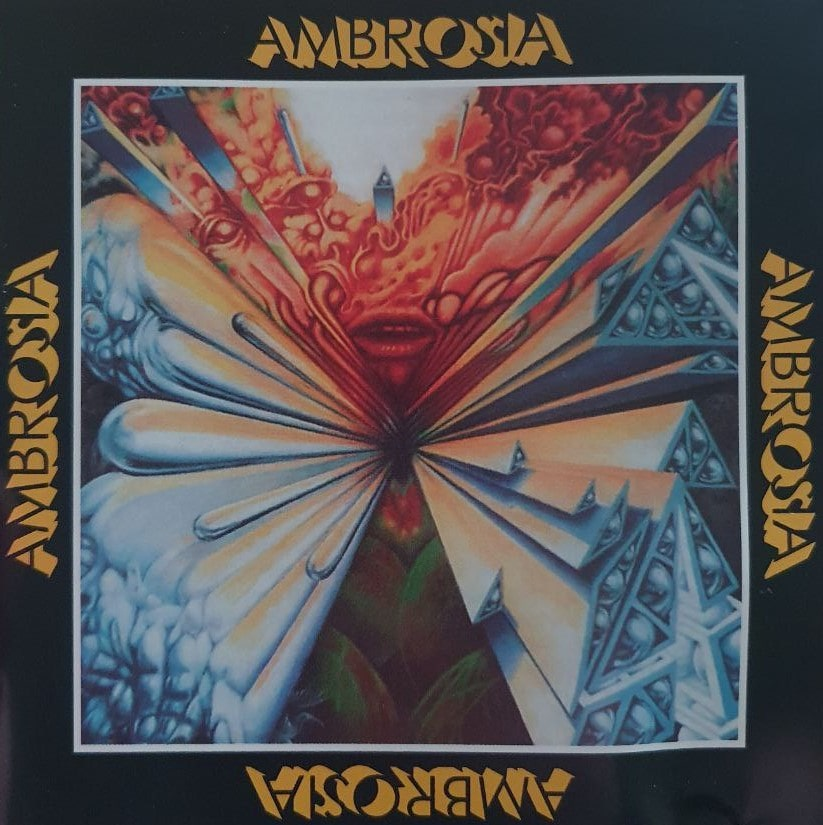 |
2005, UK, жанр Rock |
| 10. America | Homecoming | Warner Bros. Records 2655-2 |
7,12 USD | 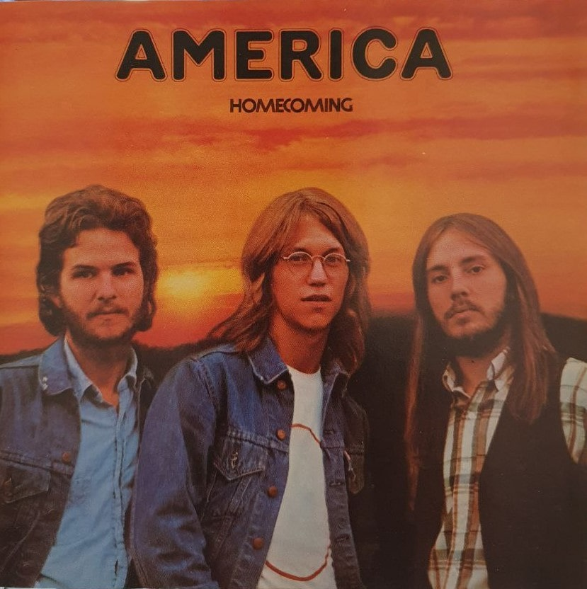 |
1995, US, жанр Rock |
| Back Pages | eONE EOM-CD-2137 |
8 USD |  |
2011, US, жанр Rock,Pop | |
| Harbor | AMCD 007 |
1 USD | 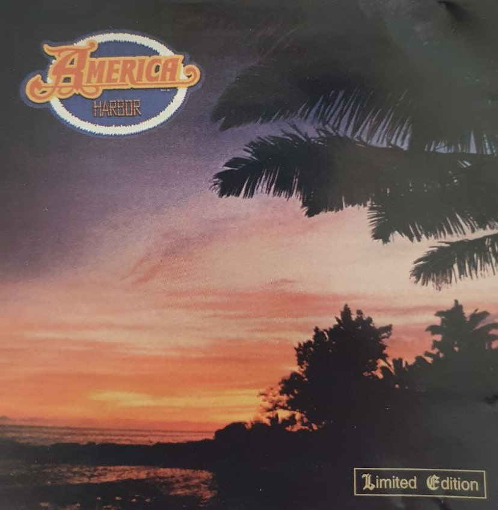 |
1977, Russia, жанр Rock, Pop | |
| 11. Angélique Kidjo | Djin Djin | Razor & Tie 0946 3938012 1 |
1,45 USD |  |
2007, Europe, жанр Pop, Folk, World, & Country |
| 12. Arcade Fire | The Suburbs | Not on Label Z89847 7G MRG385-2 TEXT 01 |
1 USD |  |
2010,Russia-PIRAT, жанр Rock |
| 13. Arctic Monkeys | Suck It And See.1 | Domino DNO300 |
19,95 USD |  |
2011, US, жанр Rock |
| Humbug.2 | Domino WIGCD220 Runout-Var.2:[Sound Performance logo] 020 8691 2121 WIGCD220 MasteringSIDCode-Var.2:IFPI LP76 |
3,26-8 USD |  |
2009,Europe, жанр Rock стиль:Indie Rock | |
| 14. Arcturus | Sideshow Symphonies | CD-Maximum CDM 0905-2390 |
4,40 USD |  |
2006, Russia, жанр Rock |
| 15. Asia | Phoenix.1 | IROND CD 08-DD603 |
6,59 USD |  |
2008,Russia, жанр Rock, Pop |
| XXX.2 | Frontiers Records FR CD 560 |
15 USD |  |
2012, Italy, жанр Rock | |
| Aria.3 | Snapper Classics SDPCD159 |
8,30 USD | 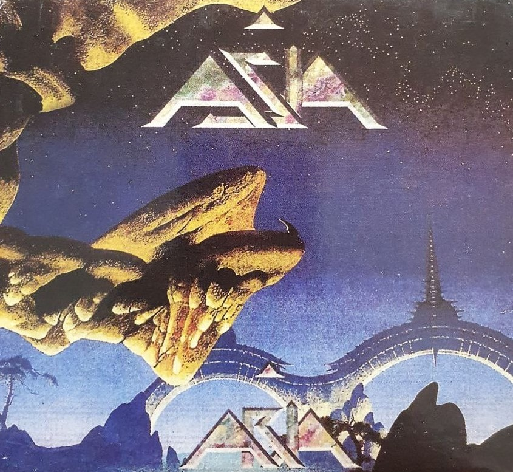 |
2004, Germany, жанр Rock | |
| 16. Atomic Rooster | Made In England.1 | One Way Records OW 30644 |
10 USD |  |
1994, US, жанр Rock |
| Death walks behind you.2 | ООО "ДОРА" JPCD9708517 |
1 USD |  |
1997, Russia, жанр Rock | |
| In Hearing Of.3 | Castle Music CMQCD926 |
7,50 USD |  |
2004, UK, жанр Rock | |
| In Hearing of.4 обложка чужая | Castle music CMQCD926 |
8 USD |  |
2004,UK,жанр Rock | |
| 17. Bachman & Turner | Bachman & Turner | RBE Music RBE002 матрица:DIDX-474792 1 |
5 USD |  |
2010,US, жанр Rock-стиль classic Rock |
| 18. Bachman-Turner Overdrive | Not Fragile | Mercury 830 178-2 матрица:?? |
6 USD |  |
2002(1974),Canada,жанр Rock-стиль Hard Rock,classic Rock |
| 19. Bad Company | Straight Shooter.1 | Swan Song – 7567-90333-2 Runout:BS 004 |
1-7 USD |  |
1975,?-Germany,жанрRock стиль Hard Rock |
| Rough Diamonds.2 | Swan Song/ООО "ДОРА" – 7567-92452-2 Runout:левый,цвет диска не совпадает.jpcd9707419/CD 756792452-2.2 V01по сайту |
1 USD |  |
1982,совсем левый-Russia,жанр Rock стиль: Classic Rock | |
| Burnin' Sky*.3 | ООО "ДОРА" – JPCD9702157 Runout:JPCD9702157 |
1-20 USD |  |
1997релиз./1975Fальбом,Russia,Лицензионное соглашение N 2132/МЗ-97 между РАО и ООО "Компания "ДОРА" от 20.01.97. Заявка N 40,жанр Rock стиль:Blues Rock | |
| Run With The Pack*.4 | Swan Song,ООО "СПЮРК" – 92435-2 Runout: 3 92435-2 SRC**01 |
1-30 USD |  |
1996релиз./1976альбом,Russsia, Лицензионное соглашение №2111/МЗ от 12.11.96 между РАО и ООО СПЮРК. Заявка №166.жанр Rock стиль:Hard Rock | |
| Desolation Angels*.5 | ООО "ДОРА",Swan Song–none – JPCD9707461 Runout:JPCD9707461 |
1-20 USD |  |
1997релиз./1979альбом,Russia,Лицензионное соглашение №2132/М3-97 между РАО и ООО "ДОРА" от 20.01.97. Заявка № 447. .жанр Rock стиль: Classic Rock | |
| Stories Told & Untold.6 | EastWest Records America – 7559-61976-2 Runout:SYM 00119 |
1 USD |  |
1996релиз.,Russia-pirat,жанр Rock, Pop стиль:Hard Rock, Pop Rock, Arena Rock | |
| Fame And Fortune.7 | Motor Records AGAT Company Runout:NORD GROUP 0023(97235118) IFPI L061 |
1 -10 USD |  |
1997г(1986г.альбом),сделано в Russia,лицензионное соглашение №2165/М3-97междуРАО и АОЗТ"АГАТ".жанр Rock стиль:Hard Rock, Classic Rock | |
| 20. Barclay James Harvest | Greatest Hits | EG records 3352-97740-2 |
1 USD |  |
Europe, жанр Electronic, Rock |
| 21. Beardfish | Mammoth | Superball Music 0543-2 |
13,25 USD | 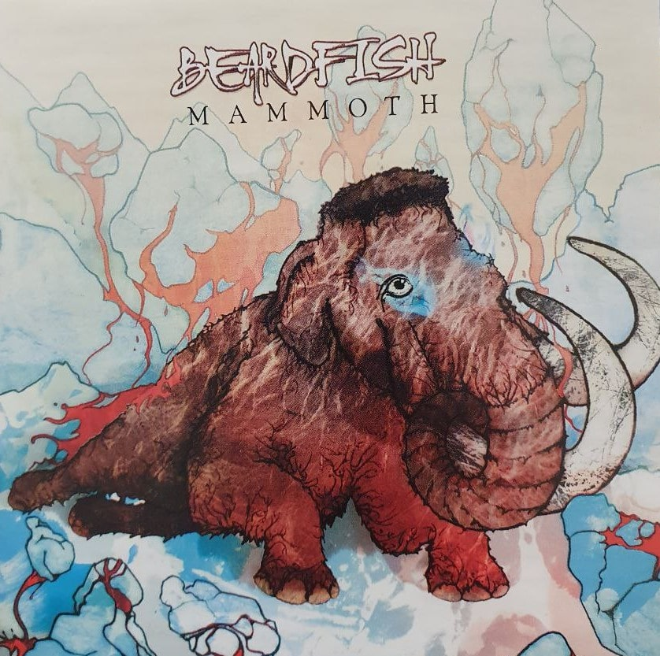 |
2011, Europe, жанр Rock |
| 22. Belle Epoque | Now | CD-Maximum CDM 0602-1023 |
1 USD |  |
2002, Russia, жанр Electronic |
| 23. Black Country Communion | Afterglow.№1 | J&R Adventures PRAR935488 |
5,28 USD |  |
2012, US, жанр Rock |
| Communion-1.№2 | J&R Adventures PRAR92338 матрица:1332210 D1 |
1 USD |  |
2010,Russia-PIRAT,жанр Rock -стиль Hard Rock | |
| -2. №3 | J&R Adventures PRAR931387 матрица:PRAR921387 |
1 USD |  |
2011,Russia-PIRAT,жанр Rock -стиль Hard Rock | |
| 24. Black Mountain | Wilderness Heart | Jagjaguwar – JAG175,Runout(Variant1):WWW.BELLWETHERMFG.COM 0ER08<7205>JAG175CD,MasteringSIDCode(Variant1):IFPI L489,Mould SID Code (Variant 1):IFPI 8102 |
6,83-15,98 USD |  |
2010г,US,жанр Rock,стиль: Stoner Rock |
| 25. Black Rebel Motorcycle Club | Beat The Devil's Tattoo | Abstract Dragon VVR730519 |
6,58 USD |  |
2010, UK & Europe, жанр Rock |
| 26. Black Sabbath | Headless Cross | Not On Label (Black Sabbath) DNL 0415 |
1 USD |  |
Bulgaria, жанр Rock |
| 27. Black Stone Cherry | Folklore And Superstition | Roadrunner Records RR 7940-2 |
3,29 USD |  |
2008, US, жанр Rock |
| 28. Blackfield | Blackfield II | Snapper Music p– SMACD900 матрица: SMACD900P |
7 USD |  |
2007,UK,жанр Rock -стиль Alternative Rock |
| 29. Blackmore's Night | Fires At Midnight.1 | Steamhammer SPV 088-72430 CDE |
1 USD |  |
2001, Russia, жанр Rock |
| Secret Voyage.2 | Steamhammer SPV 91782 CD-E |
7,77 USD |  |
2008, Germany, жанр Rock, Folk, World, & Country | |
| Autumn Sky.3 | Spinefarm Records – SPI373CD,– 2749221 матрица:06025 274 922-1 01 + 52595075 |
7 USD |  |
2010, Finland, жанр Rock, Folk, World, & Country стиль Folk Rock | |
| 30. Blood, Sweat And Tears | Child Is Father To The Man.1 | Legacy – CK 63987 матрица: 24746 ST2 |
2 USD |  |
2000,Europe левый??,жанр Jazz, Rock-стиль Blues Rock, Psychedelic Rock, Jazz-Rock, Pop Rock |
| B, S & T 4 .2 | Columbia,Legacy -CK 66422 матрица:E3 1A CK66422 03 |
5,8 USD |  |
1996,US,жанр Jazz, Rock -стиль Soul, Soul-Jazz, Ballad | |
| 31. Blue Öyster Cult | Tyranny And Mutation _ Spectres | Not On Label (Blue Öyster Cult) JPCD 2003069 |
1 USD |  |
жанр Rock |
| Agents Of Fortune / Cultosaurus Erectus | Not On Label (Blue Öyster Cult) none |
1 USD |  |
Russia, жанр Rock | |
| 32. Bob Dylan | Modern Times | Columbia 82876 87606 2 |
2,34 USD |  |
2006, Europe, жанр Blues Rock, Folk Rock |
| Together Through Life | Sony Music 88697438932 |
2,19 USD |  |
2009, Europe, жанр Rock | |
| 33. Bob Seger | Face The Promise | Capitol Records CDP 0946 3 54506 2 0 |
3,25 USD |  |
2006, US, жанр Rock |
| 34. Boston | Don't Look Back | Epic 82876 82241 2 |
5 USD |  |
2006, US, жанр Rock |
| Boston | Epic 69699 86322 2 |
4,69 USD | 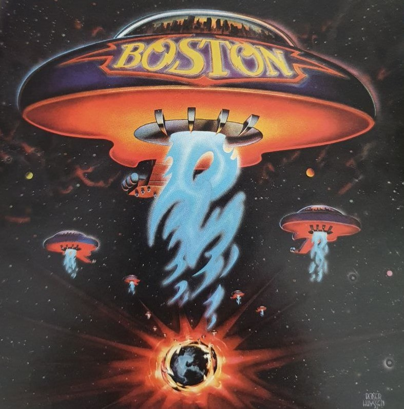 |
2006, US, жанр Rock | |
| 35. Brand X | Unorthodox Behaviour++ | Caroline Blue Plate – CAROL 1387-2 матрица: DIDX-223318 1 |
8 USD |  |
1976/1989,US,жанр Jazz, Rock-стиль Art Rock, Jazz-Funk |
| 36. Brazen Abbot | My Resurrection | Irond IROND CD 05-DD259 |
7,03 USD |  |
2005, Russia, жанр Rock |
| 37. Buckcherry | All Night Long | Eleven Seven Music ESM 770 |
3,50 USD |  |
2010,US, жанр Rock |
| 38. Buffalo Springfield++ | Buffalo Springfield Again | ATCO Records – 7567-90391-2 матрица:756790391-2 WMME |
5 USD |  |
1999,Europe,жанр Rock-стиль Folk Rock, Acoustic, Classic Rock |
| 39. CAGE the Elephant | Thank you happy birthday | Jive 88697-81421-2 |
3 USD |  |
2011, US, жанр Rock |
| 40. Cake | Showroom Of Compassion | Upbeat Records none |
8,88 USD |  |
2011, US, жанр Rock |
| 41. California Guitar Trio | Echoes | Inner Knot INK7716 |
1 USD |  |
2008, жанр Folk, World, & Country |
| 42.Candy Dulfer | Candy Store | Heads Up International HUCD3131 |
5,27 USD |  |
2007, US, жанр Jazz, Latin, Funk _ Soul |
| 43.Caravan | In The Land Of Grey And Pink*.1 | SomeWax Recordings SW339-2 Runout:[SomeWax logo]SOME WAX[SomeWax logo]Caravan • IN THE LAND OF GREY AND PINK SW339-2 Mould SID Code: IFPI ZG24 |
1-20 USD |  |
2004,Russia-ФОНОТЕКА Меломана,ООО «ЮРФОРТ» Лицензия МПТР России ВАФ № 77-121 жанр:Rockстиль: Pop Rock, Prog Rock |
| 44.Cat Stevens | Tea For The Tillerman | A&M Records – A&M CD-4280 - DIDX 583 Runout: DIDX-000583 4(7) 🝊 🝊🝊 🝊🝊🝊🝊🝊 |
3-20 USD |  |
1988релиз?/1970альбом,US,жанр Rock, Pop, Folk, World, & Country стиль: Folk Rock, Pop Rock, Folk |
| 45. Chicago | The very best of Chicago | Arcade 9902295 |
1 USD |  |
1996, жанр Jazz, Rock, Pop |
| Chicago VII | Chicago Records Inc. CRD-3007 |
5 USD |  |
US, жанр Jazz, Rock | |
| 46. Chick Corea | The Mad Hatter | Verve Records – 519 799-2 Runout:519 799-2 01 / made in germany PMDC |
16,2 USD |  |
1993г, Germany,жанр Jazz, Rock стиль: Jazz-Rock, Fusion |
| 47. Chickenfoot | Chickenfoot.1 | Edel 0197532ERE |
3,29 USD | 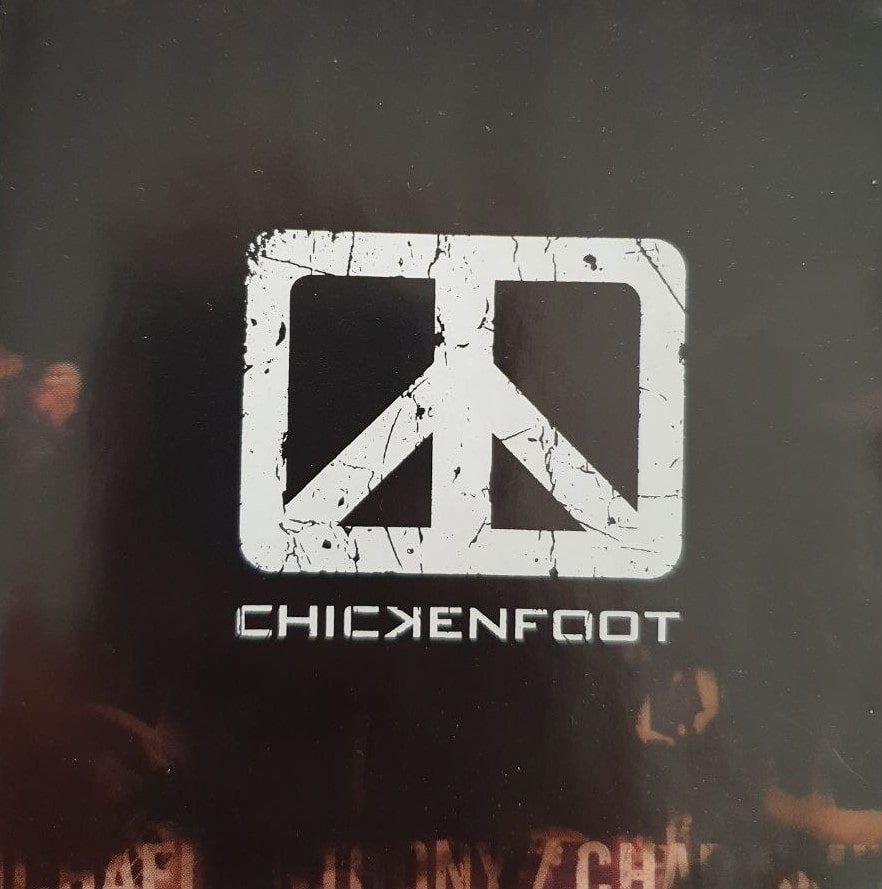 |
2009, Germany, жанр Rock |
| III .2 | eONE EOM-CD-2377 |
1 USD | 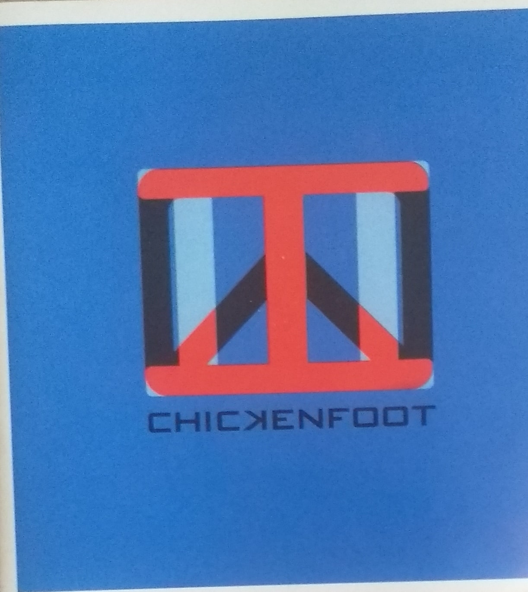 |
2011,Russia-PIRAT,жанр Rock | |
| 48. Chris Isaak | Beyond The Sun | Vanguard 78212-2 |
16,48 USD |  |
2011, US, жанр Rock |
| Mr.Lucky | Reprise Records – 518008-2 Runout:X31594 1 518008-2 TEXT 01 |
1-3 USD |  |
2009,Russia-pirat,жанр Rock стиль:Blues Rock, Southern Rock, Pop Rock: | |
| 49. Chris Thompson | Timeline | Voiceprint VP452CD Runout:EDC Blackburn Ltd VP452CD 01 MasteringSIDCode:IFPI L136 |
1 USD |  |
2009,Russia-PIRAT,жанр Rock, Pop |
| 50.Eric Clapton | Clapton | Reprise Records 9362496359Runout (Variant 2 to 15): [Warner Logo] 936249635-9 V01 DSK/Mastering SID Code (Variant 1 to 15): IFPI L016 |
3,30 USD | 2010, EU, жанр Rock, Blues стиль: Acoustic, Blues Rock, Classic Rock, Folk Rock | |
| 51. Colosseum | Valentyne Suite / Daughter Of Time | Not On Label (Colosseum) – CLCLCD 707002 Runout:NOTE!! |
0,5 USD |  |
1970-1970-2005,Russia-PIRAT??картинка несовпадает с сайтом,жанр Jazz, Rock стиль:Jazz-Rock, Prog Rock |
| 52. Creedence Clearwater Revival | Cosmo's Factory.1 | Fantasy FAN-30880,Runout (Variant 7):DIDX-141947 1 A05, IFPI L327,Mould SID Code (Variant 2, 7): IFPI 500(F)8? |
5,48-14 USD |  |
2008, US-подделка?, жанр Rock,стиль:Blues Rock, Rock & Roll, Classic Rock |
| Willy And The Poor Boys / Cosmo's Factory.2 | CD-Maximum cdm 1199-371 |
1 USD |  |
2001, Russia, жанр Rock | |
| Bayou Country / Green River.3 | CD-Maximum CDM 1199-370 |
1 USD |  |
2001, Russia, жанр Rock | |
| 53. Crosby, Stills, Nash & Young | American Dream ++.1 | Atlantic – 7 81888-2 матрица:OLYPHANT X7619 3 81888-2 RE-01 03 M1S1? |
5 USD |  |
1988?,US,жанр Rock-стиль Folk Rock |
| Déjà Vu.2 | SomeWax Recordings – SW297-2 матрица:Crosby, Stills, Nash & Young • DEJA VU SW297-2 |
1 USD |  |
2004, Russia-PIRAT,жанр Rock-стиль Folk Rock, Country Rock, Classic Rock | |
| After The Storm.3 | Atlantic 7567-82654-2 |
8,24 USD |  |
1994, Europe, жанр Rock | |
| Looking Forward.4 | Reprise Records – 9 47436- Runout (Variant 5):[WEA Mfg. Olyphant Logo]X9446 1 47436-2 01 M5S5 CI2 |
2,2 USD |  |
1999,US,жанр Rock, Pop, Folk, World, & Country стиль: Folk Rock | |
| 54. Crosby, Stills & Nash | Crosby, Stills & Nash | Rhino Records,Atlantic – R2 73290 Runout:A 5531 3473290 E60427-02 M1S1несовпадает с диском |
1 USD |  |
2006,-PIRAT, жанр Rock,стиль: |
| 55. Dave Matthews Band | Away From The World | RCA 88725-45257-2 |
2,99 USD |  |
2012, US, жанр Rock, Folk, World, & Country |
| 56. David Bowie | Reality | Columbia none |
1 USD |  |
2003, Europe, жанр Rock |
| 57. Deadsoul Tribe | A Lullaby For The Devil | Inside Out Music SPV 79572 CD-E |
4 USD |  |
2007, Germany, жанр Rock |
| 58. Dee Dee Bridgewater | Red Earth - A Malian Journey | DDB Records 0602517228290 |
3,85 USD |  |
2007, Europe, жанр Jazz, Folk, World, & Country |
| 59. Deep purple | Rapture of the Deep.1 | Eagle Records CD-362-48570-20 |
1 USD |  |
2005, Russia, жанр Rock |
| Burn.2 | Purple Records CDP 7 92611 2 |
13,27 USD |  |
1974, UK, жанр Rock | |
| Machine Head*.3 | Not On Label (Deep Purple) CD 043 Runout: 20P2-2605 G |
1-20 USD |  |
1972альбом/ Russia-РЕДКОСТЬ, жанр Rock стиль: Hard Rock | |
| Machine Head.3лицензия (2cd) | EMI 7243 8 59506 2 9 Runout(CD1 Var.1):859507 2 . 1 1:2:EMI SWINDON-IFPI L041 cd2:859508 2 . 1 EMI SWINDON 1:2:12 |
10,44 USD | .jpg) |
1997,UK,жанр Rock стиль: Hard Rock | |
| Bananas.4 | EMI 7243 5 91048 2 9 |
12,50 USD |  |
2003, UK, жанр Rock | |
| Stormbringer.5 | EMI CDP 7 91084 2 |
22,22 USD |  |
1995, UK, жанр Rock | |
| Purpendicular.6 | 5,55 USD |  |
1996, Europe, жанр Rock | ||
| Группа Ian Gillan & Tony Iommi.7альбом "WhoCares" | Armoury Records,Ear Music CD-2шт. ARM250782 Runout(CD1):IFPI LN08 ARM25078-2 2205434 02 |
17,84 USD |  |
2012,US CD2 утерян,жанр Rock стиль: Heavy Metal | |
| Deep Purple -легенды рока | 900 рос.руб/ 28 бел.руб /11,34 USD |  |
книга о группе Deep Purple -легенды рока. Включает Книгу песен /Биографию / Ноты /Редкая книга | ||
| 60. Devin Townsend Project | Ki | Inside Out Music IOMCD 312 |
8,77 USD |  |
2009, Europe, жанр Electronic, Rock |
| 61. Dire Straits | Love Over Gold | Vertigo 800 088-2 |
7 USD |  |
1996, UK, жанр Rock |
| Dire Straits | Warner Bros. Records 9 47769-2 |
4 USD |  |
US, жанр Rock | |
| Making Movies | Vertigo 800 050-2 |
3,56 USD |  |
Europe, жанр Rock, Pop | |
| Making Movies | Vertigo 800 050-2 |
3,32 USD | |
Europe, жанр Rock, Pop | |
| 62. Disturbed | Ten Thousand Fists | Reprise Records none |
1 USD |  |
2005, Russia, жанр Rock |
| 63. Donald Felder | Road To Forever | Rocket Science – RSV091 |
1 USD |  |
2012,US левый??, жанр Rock,стиль: AOR, Classic Rock, Pop Rock |
| 57. Doors | The Doors / Strange Days | CD-Maximum CDM 1199-375 Runout: CDM 1199-375 |
1-15 USD | 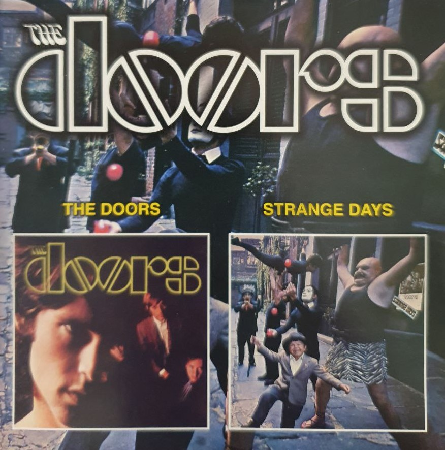 |
2001, Russia-"СД-Максимум"Лицензионное соглашение с РАО № МЗ II/060/2001 12.02.2001,жанр Rock стиль: Psychedelic Rock, Classic Rock |
| 58. Dragonfly | Dragonfly | Gear Fab Records GF-208 |
8,75 USD | 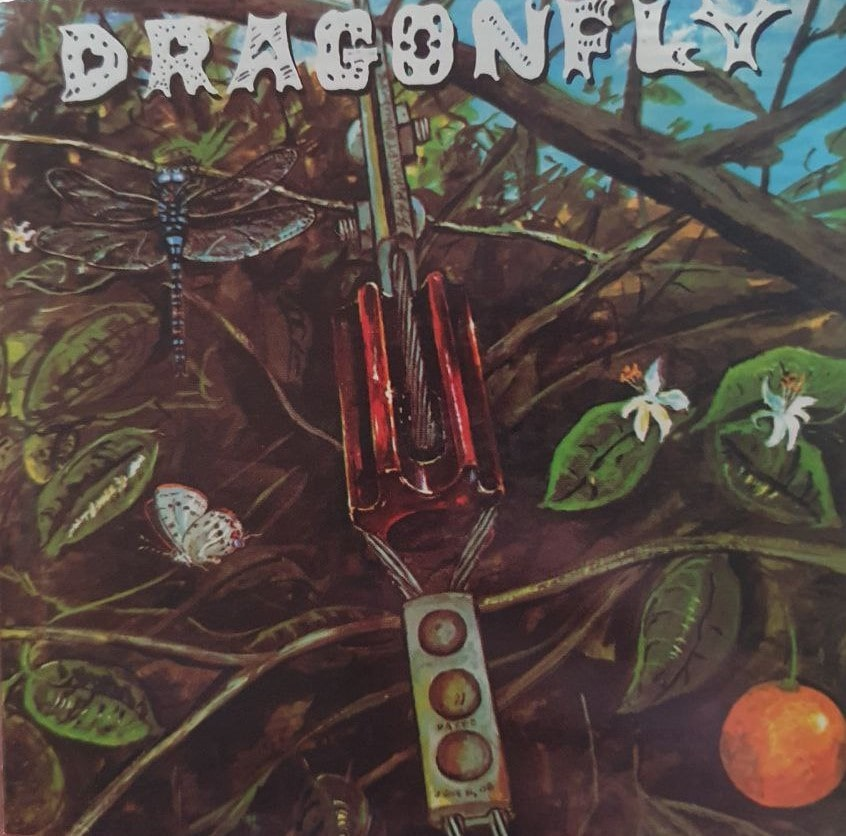 |
2004, US, жанр Rock |
| 59. Dream Theater | Black Clouds & Silver Linings | Roadrunner Records RR 7883-2 |
5,24 USD |  |
2009, Europe, жанр Rock |
| 60. Drive-By Truckers | Brighter Than Creation's Dark | New West Records NW6135 |
5,43 USD |  |
2008, US, жанр Rock |
| Dweezil Zappa | Go With What You Know | Zappa Records – ZR 20003,Runout: GP-07 GT 000841 |
1 USD |  |
2006,Russia-PIRAT, жанр Jazz, Rock,стиль: Fusion, Hard Rock, Arena Rock |
| 61. Eagles Of Death Metal | Heart On* | Downtown Music VVR886803, Runout (Variant 1, 2, 3, 4): 06025 178 868-0 01 + 52206420,Mastering SID Code (Variant 1, 2, 3, 4): IFPI LV27, |
1-3,11 USD |  |
2008,Russia-PIRAT РЕДКИЙ, жанр Rock стиль: Alternative Rock |
| 62. Echolyn | echolyn | Not On Label (Echolyn Self-released) none |
16,67 USD |  |
2012, US, жанр Rock |
| Elton John | Goodbye Yellow Brick Road.1 | Mercury и This Record Co.Ltd – 528 159-2 Runout: 528 159-2 01/Runout(Mould text):MADE IN GERMANY BY PMDC |
4 USD |  |
1973/1995,Europe,жанр Rock,Pop стиль:Pop Rock, Ballad, Rock & Roll |
| Don't Shoot Me I'm Only The Piano Player.2 | Mercury – 528 154-2 Runout: 528 154-2 |
1-4 USD |  |
1995,Russia-PIRAT,жанр Rock стиль:Pop Rock,Classic Rock | |
| The Union.3 | Mercury –2748480 Runout:[Universal logo x4]06025 274 848-0 01 + 52623027 |
1-4 USD |  |
2010, Russia-PIRAT,Elton John / Leon Russell жанр Rock, Folk, World, & Countryстиль: Soft Rock, Ballad | |
| Captain Fantastic And The Brown Dirt Cowboy.4 | Carrere – 96.089 Runout:MA-S2 I-92 01 |
1-10 USD |  |
1975,Russia-PIRAT, жанр Rock стиль: Pop Rock Classic Rock | |
| Peachtree Road.5 | Runout: |
1-5 USD |  |
2004,Russia-PIRAT, жанр Rock стиль: Pop Rock | |
| 63. Emerson, Lake & Palmer | Tarkus / Pictures At An Exhibition | Victory 828 465-2 |
1 USD |  |
2000, Europe, жанр Rock |
| 64. Fish | 13th Star | Chocolate Frog Records CF140207 |
1 USD |  |
2008, Russia, жанр Rock |
| 65. Fleetwood Mac | Heroes Are Hard To Find.1 | Reprise Records 7599-27216-2 Runout:759927216-2 RSA |
13,19 USD |  |
1974,Europe,жанр Rock,Blues стиль: Blues Rock, Pop Rock |
| Rumours.2 CDx2 | Warner Bros.Records 8122-73882-2 Runout(CD1):[Warnerlogo]812273882-2/1 02/04 V01 MasteringSIDCode(CD1):IFPI L012 |
5,49-20 USD |  |
1977,Europe-РЕДКОСТЬ/два одинаковых диска!,жанр Rock стиль: Soft Rock, Classic Rock | |
| Rumours.3 CDx2 | Warner Bros.Records 8122-73882-2 Runout(CD1):[Warnerlogo]812273882-2/1 02/04 V01 MasteringSIDCode(CD1):IFPI L012 |
5,49-20 USD | |
1977,Europe-РЕДКОСТЬ/два одинаковых диска!,жанр Rock стиль: Soft Rock, Classic Rock | |
| Bare Trees Plus Kiln House.4 | SomeWax Recordings – SW205-2 Runout:SOME WAX[SomeWax logo]Fleetwood Mac•BARE TREES + KILN HOUSE SW205-2 MouldSIDCode:IFPI ZG25 |
1-5 USD |  |
2003,Russia-ФОНОТЕКА МЕЛОМАНА,ООО "Юрфорт" Лицензия МПТР России ВАФ № 77-121,жанр Rock стиль:Classic Rock, Blues Rock | |
| Fleetwood Mac.5 | Reprise Records – 2281-2 Runout:@ D.A.T.A. IFPIL 311 22812 G E3 |
4,6 USD |  |
1975,Australia,жанр Rock стиль:Folk Rock, Pop Rock | |
| Behind The Mask.6 | Warner Bros. Records – 7599-26111-2 Runout: 759926111-2 01$ |
2,15 USD |  |
1990,Europe,жанр Rock стиль: | |
| Tango In The Night.7 | Warner Bros.Records – 7599-25471-2 Runout:759925471-2.2 06/99 MasteringSIDCode(Variant 1):IFPI L011 |
3-5 USD |  |
1987,Europe,жанр Rock, Pop стиль:Pop Rock,Soft Rock | |
| Mirage.8 | Warner Bros.Records –7599-23607-2 Runout: 256952.2 RSA |
4-6 USD |  |
1982,Europe,жанр Rock стиль: Pop Rock | |
| English Rose.9 | BGO Records – BGOCD750 Runout: ? IFPI 039 |
9,97 USD |  |
1969/2007г,UK,жанр Rock,Blues, стиль:Blues Rock, Classic Rock | |
| Tusk.10 | Warner Bros.Records 7599-27395-2 Runout:759927395-2 WME |
11 USD |  |
1979,Europe,жанр Rock стиль: | |
| 66. Flock Rock | The Best Of The Flock | Gott Discs GOTTCD055,Runout(Stamped):BP-32759 GOTTCD055 SP CD 16210 ,molding ifpiRP102 |
5-16 USD |  |
2006, UK, жанр Jazz, Rock стиль Fusion, Jazz-Rock: |
| 67. Flying Colors | Flying Colors | Music Theories Recordings MTR 7363 2 |
11 USD |  |
2012,Europe, жанр Rock |
| 68. Foghat | Last Train Home | Foghat Records FHR004,Runout:1301531,IFPI LN08,molding J104 |
1-7,79 USD |  |
2010,?ссылка не нашла US, жанр Rock |
| 69. Foo Fighters | Echoes, Silence, Patience & Grace | RCA 88697 11516 2 |
3,29 USD |  |
2007, Europe, жанр Rock |
| 70. Foxy Shazam | The Church Of Rock And Roll | I.R.S. Records 509999 41160 2 1, Runout: DIDX-778588 2 B01,Mastering SID Code:IFPI L327,Mould SID Code: IFPI AKNOA |
5,64-12,65 USD |  |
2012,USA, жанр Rock стиль:Prog Rock, Symphonic Rock, Art Rock, Glam, Arena Rock, Classic Rock |
| 71. Free | Heartbreaker.1 | ООО Дора JPCD9706377 |
1 USD | 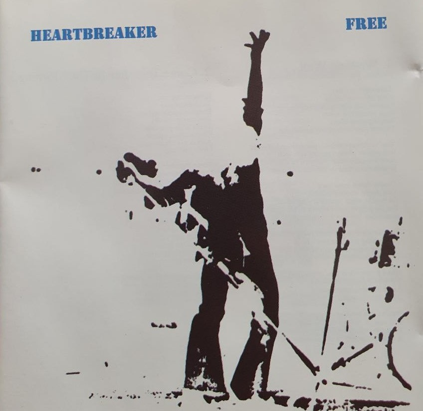 |
1972, Russia, жанр Rock, Funk / Soul |
| Fire And Water.2 | AGAT Company Ltd. |
1 USD |  |
1997, Russia, жанр Rock | |
| Free at last.3 | AGAT Company Ltd. |
1 USD |  |
1997, Russia, жанр Rock | |
| The Best Of Free: All Right Now.4 | Island Records,Island Records – CIDTV 2/ – 824 523-2 Runout/Variant 4: 824 523-2 01 > 1B |
6,23 USD |  |
1997, Russia, жанр Rock | |
| 72. Garbage | Not Your Kind Of People | Stun Volume STNVOL-010 |
5,90 USD |  |
2012, Europe, жанр Rock |
| Bleed Like Me | BMG Berlin Musik 4650467124749 |
1 USD |  |
2005, Russia, жанр Electronic, Rock | |
| Genesis | The Lamb Lies Down On Broadway CD*2шт.1 | Atlantic – 82677-2 Runout "Disc1": X17828 3 82677-2.1 RE-1 01 M1S1 [wea mfg. OLYPHANT] |
10 USD |  |
1974г, Europe,ОРИГИНАЛ!! CD*2шт.2диск Утерян!!жанр Rock, Pop стиль: Pop Rock, Indie Rock |
| Wind & Wuthering/Подделка!.2 | ?? ?? Runoun:?? |
1 USD |  |
1976г,??,жанр Rock,стиль:Prog Rock | |
| A Trick Of The Tail.3 | SomeWax Recordings – SW239-2 Runoun:[SomeWax logo] SOME WAX [SomeWax logo] Genesis • TRICK OF THE TAIL SW239-2 |
1-20 USD |  |
2003/впервые в 1976г,Russia-PIRATоригинал,РЕДКОСТЬ!!жанр Rock,стиль: Prog Rock, Classic Rock | |
| 73. George Harrison | Cloud Nine | Dark Horse Records 7599-25643-2 |
3,96 USD |  |
1987, Europe, жанр Rock |
| 74. George Thorogood And The Destroyers | The Dirty Dozen.1 | Capitol Records 509996 84082 20 |
5,79 USD |  |
2009, US, жанр Rock, Blues |
| 2120 South Michigan Ave.2 | Capitol Records – 5099902933825 Runout: DIDX-749507 1 B03 |
6,1 USD |  |
2011, US, жанр Blues,стиль Chicago Blues | |
| 75. Glenn Hughes | Return Of Crystal Karma.1 | Steamhammer SPV 085-21812 DCD,Runout: LSA 0020, |
1-3,11 USD |  |
2000,Russia-PIRAT, жанр Rock |
| First Underground Nuclear Kitchen.2 | Irond IROND CD 08-DD618, |
6,59 USD |  |
2008, Russia, жанр Rock, Funk / Soul | |
| Soul Mover.3 | Irond IROND CD 04-DD226,Runout: IROND CD 04-DD226,MasteringSIDCode: IFPI L641 |
9,24-15 USD |  |
2005,Russia,Runout(Mould Area):UEP-CDЛицензия МЛТР России ВАФ N°- 77-15 жанр Rock стиль: Hard Rock | |
| 76. Golden Earring | Eight Miles High 1 | Red Bullet – RB 66.202 матрица: DOCdata RB 66.202 |
8 USD |  |
2001, Europe,жанр Rock-стиль Pop Rock, Psychedelic Rock |
| Switch 2 | Polydor – 847 160-2 матрица:847 160-2 01 /MADE IN GERMANY |
9 USD |  |
1991,Europe,жанр Rock-стиль Pop Rock | |
| Golden Earring 3 | Polydor –847 497-2 матрица: 847 497-2 01 MADE IN GERMANY |
9 USD |  |
1991 Netherlands,,жанр Rock-стиль Pop Rock,Hard Rock,Classic Rock | |
| Golden Greats 4 | Polydor – 847 498-2 матрица:847 498-2 01 + |
3 USD |  |
1991,Germany,жанр Rock-стиль Pop Rock,Hard Rock,Classic Rock | |
| Tits 'n Ass | Universal Music 370 234-0 |
8,46 USD |  |
2012, Europe, жанр Rock | |
| 77. Gomorrha | I Turned To See Whose Voice It Was | Dogtoire DGCD100048 |
1 USD |  |
2010, Russia, жанр Rock |
| 78. Goo Goo Dolls | Something For The Rest Of Us | Warner Bros. Records – 524501-2 матрица: |
2 USD |  |
2010,US-?,жанр Rock,-стиль Pop Rock |
| 79. Gov't Mule | By A Thread | Provogue – PRD 7294 2 матрица: prd 7294.2 #2 odr |
1 USD |  |
2009,Russia-PIRAT,жанр Rock -стиль Blues Rock, Alternative Rock, Hard Rock |
| Mighty High | ATO Records ATO0039, 88088-21585-2 |
7,69 USD |  |
2007, US, жанр Rock, Reggae | |
| 80. GPS | Window To The Soul | Inside Out Music SPV 48852 CD |
5,43 USD |  |
2006, Germany, жанр Rock |
| 81. Grand Funk Railroad | Closer To Home | SomeWax Recordings – SW187-2 матрица:SOME WAX [SomeWax logo] Grand Funk Railroad • Closer To Home SW187-2 |
1USD |  |
2003, Russia- Фонотека Меломана,жанр Rock, Pop-стиль Hard Rock |
| Closer To Home _ E Pluribus Funk | Not On Label (Grand Funk Railroad) GRCD 004 |
1 USD |  |
Russia, жанр Rock | |
| 82. Grateful Dead | American Beauty | Warner Bros. Records 7599-27190-2 |
2,62 USD |  |
Europe, жанр Rock |
| 83. Green Day | 21st Century Breakdown++ | Reprise Records (2) – 9362-49802-1 матрица: [Warner Music Logo] 936249802-1.2 V01 RVJ |
1 USD |  |
2009,Russia-PIRAT,жанр Rock-стиль Alternative Rock, Punk |
| 84. Grinderman | Grinderman2 | Anti- – 87125-2 матрица: DADR OSUWS<7885>871102 |
1 USD | 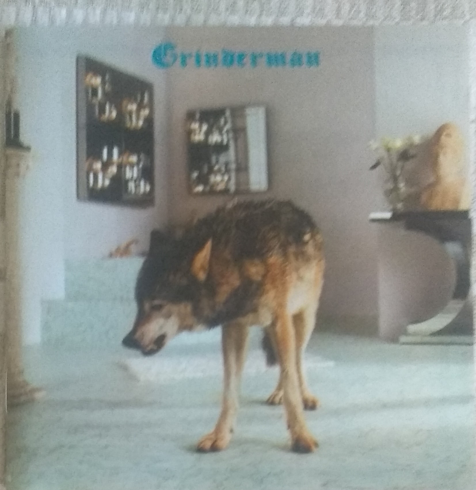 |
2010, US,жанр Rock-стиль Blues Rock, Garage Rock, Rock & Roll |
| 85. Halford | Halford IV - Made Of Metal | Metal God Records MGE8077192 |
13,18 USD |  |
2010, US, жанр Rock |
| 86. HAND COOL+TEDDY BEAR | Meat Loaf | Mercury Records 2734097 06025 273 409-7 01*52526254 |
5 USD |  |
2010, Europe, жанр Rock |
| Heaven & Hell | The Devil You Know | Roadrunner Records – RR 7853-2 Runout: [Warner 'Big W' logo] 168617853-2 V01 RTS |
8,3 USD |  |
2009г,Europe,жанр Rock стиль:Doom Metal, Heavy Metal |
| 87. Helloween | Straight Out Of Hell | Victor VIZP-113 |
1 USD |  |
2013, Russia, жанр Rock |
| 88. Herbie Hancock | The Imagine Project | ? ? |
? USD |  |
2010,Russia, жанр Jazz, Folk, World, & Country |
| 89. HIM | Dark Light | sire |
3 USD |  |
Europe, жанр Rock |
| 90. Hole | Nobody's Daughter | Mercury 602527370439 |
5,49 USD |  |
2010, Europe, жанр Rock |
| 91. Ian Gillan | One Eye To Morocco | Edel 0195472ERE |
5 USD |  |
2009, Germany, жанр Rock |
| Gillan's Inn | Not On Label (Ian Gillan) Лицензионное соглашение № МЗ-II/75/2002 от 20.02.02 Для продаж на территории России. For sale only in Russia.Runout: LDR 3626 JA-GL 060505 |
1 USD |  |
2006,Russia-PIRAT,жанр Rock-стиль Hard Rock | |
| 92. IF | IF 4 | Repertoire Records REPUK 1098,Runout(Variant1):[Sony DADC logo] A0100833856-0101 13 A0,MasteringSIDCode(Variant1): IFPI L553,MouldSIDCode(Variant1): IFPI 94K4 |
11 USD |  |
2007, UK, жанр Rock |
| 93.Iron Butterfly | Metamorphosis _ Scorching Beauty | Not On Label (Iron Butterfly) IRBTCD 70753 |
1 USD |  |
Russia, жанр Rock |
| 94. Iron Maiden | MP3 | MP3 Music Collection PD 42300 / PD 42301 |
1 USD |  |
Russia-Санкт-Питербург, жанр Rock |
| 95.Jack White | Blunderbuss | Third Man Records 88691 95993 2 |
2,96 USD |  |
2012, USA, жанр Rock, Blues |
| 96. Jade Warrior | Now | WindWeaver Music WWMCD001 |
18 USD |  |
2008, UK, жанр Rock |
| Jakszyk*, Fripp* And Collins* | A Scarcity Of Miracles (A King Crimson ProjeKct) | Discipline Global Mobile, Inner Knot – DGM1101 Runout:7695 - KCSP211 052511 |
1 USD | .jpg) |
2011,Russia-PIRAT,жанр Rock стиль: Prog Rock |
| 97. James Brown | Gettin' Down To It | Verve Records – 2600645 матрица: 4 605026 006454 ВАФ №77-13 |
3,6 USD |  |
2005,Russia-?,жанр Funk / Soul -стиль Soul-Jazz, Soul |
| 98. James Carter | Present Tense | EmArcy B0010985-02 |
4,25 USD |  |
2008, US, жанр Jazz |
| 99. Jane's Addiction | The Great Escape Artist | Capitol Records -509999 65112 20 матрица: 9651122 AB51786-01 |
1 USD |  |
2011,Russia-PIRAT,жанр Rock-стиль Alternative Rock |
| 100. Jarvis Cocker | Further Complications | Rough Trade RTRADCD 540, Runout:[arvato digital services BERTELSMANN logo] + + I701901 RTRADCD 540,Mastering SID Code: IFPI L028,Mould SID Code: IFPI 10K2 |
3,47-5 USD |  |
2009, US, жанр Rock стиль: Indie Rock |
| 101. Jeff Beck | Blow by Blow/Wired/There And Back 3-Pak.1 | Epic E3K 64808 |
20,36 USD |  |
US, жанр Jazz, Rock |
| Blow By Blow.2 | Epic 502181 2 |
14,15 USD |  |
2001, Europe, жанр Jazz, Rock (не распакованный) | |
| You Had It Coming.3 | Epic 501018 2 |
5,05 USD |  |
2001, Europe, жанр Electronic, Rock | |
| Got The Feelin'.4 | Epic 502181 2 |
1 USD |  |
1993, Italy, жанр Rock | |
| Jeff.5 | Not On Label (Jeff Beck) none |
1,12 USD |  |
2003, Russia, жанр Electronic, Jazz, Rock | |
| 102. Jethro Tull | Heavy Horses/ Broadsword And The Beast.1 | CD-Maximum CDM 0599-272 Runout: CDM 0599-272,MasteringSIDCode: IFPI LD01,Mould SID Code: IFPI LC77? |
1 USD |  |
1999,Russia,"СД-Максимум"Лицензионное соглашение № ЛС-9/ВР-127 Т от 23.02.99г., жанр Rock стиль: Classic Rock |
| Heavy Horses/Broadsword And The Beast.2 | CD-Maximum – CDM 0599-272 Runout: CDM 0599-272,MasteringSIDCode: IFPI LD01,Mould SID Code: IFPI LC77? |
1 USD | |
1999,Russia,"СД-Максимум"Лицензионное соглашение № ЛС-9/ВР-127 Т от 23.02.99г.,жанр Rock стиль: Classic Rock | |
| Stand Up "CHRONOLOGY 1969г"*.3 | Chrysalis,ENIMS-BC – BGDC03018 Runout:BGDC 03018 G |
1-180 USD |  |
1969г+9 бонус-треков,Russia редкостьБОЛЬШАЯ,жанр Rock стиль:Folk Rock, Prog Rock | |
| Benefit"CHRONOLOGY 1970г"*.4 | ENIMS-BC,Chrysalis – BGDC 03029 Runout: BGDC 03029 G |
1-180 USD |  |
1970+5 бонус-треков,Russia редкостьБОЛЬШАЯ,жанр Rock стиль:Folk Rock, Prog Rock | |
| Aqualung"CHRONOLOGY 1971г"*.5 | Chrysalis,ENIMS-BC – BGDC03030 Runout: BGDC 03030 G |
1-180 USD |  |
1971+8бонус-треков,Russia редкостьБОЛЬШАЯ,жанр Rock стиль:Classic Rock | |
| Thick As A Brick.6 | Chrysalis – CDP 32 1003 2 Runout(Variant4):321003 2 .3:1:1 EMI SWINDON,MouldSIDCode(Variant4):IFPI 1427 |
6,33 USD |  |
1994релиз/1972альбом,UK,жанр Rock стиль: Prog Rock | |
| Living In The Past.7 | Chrysalis – CDP 32 1575 2 Runout-v6:321575 2 · EMI SWINDON 010201,ifpi AAHP5(на сайтеAAHY4)? |
5,85-10 USD |  |
1972, Europe,жанр Rock стиль: Folk Rock, Prog Rock | |
| A Passion Play"Chronology 1973"*.8 | ENIMS-BC,Chrysalis – BGDC03019 Runout:BGCD 03019 G |
1-100 USD |  |
1973+9BonusTracks,Tracks 3-11 from double album "Nightcap",Russia редкость БОЛЬШАЯ,жанр Rock стиль: Prog Rock | |
| Too Old To Rock 'N' Roll: Too Young To Die!.9 | Chrysalis –F2 21111,–DIDX 2942 Runout:ЛЕВЫЙ 21111-2 MO L2A27K Y 1-1-1 CAPITOL JAX |
1 USD |  |
1976,US?ЛЕВЫЙ,жанр Rock стиль:Prog Rock,Classic Rock | |
| Under Wraps.10 | Chrysalis – CDP32 1461-2 Runout:SYM 00073 |
1-5 USD |  |
1997,Russia-PIRAT,жанр Rock стиль: Art Rock, Pop Rock, Prog Rock | |
| TAAB2 Ian Anderson/из группы Jethro Tull/.11 | CD-Maximum – CDM 0599-272 Runout: CDM 0599-272,MasteringSIDCode: IFPI LD01,Mould SID Code: IFPI LC77 |
11-25 USD |  |
2012,Europe,жанр Rock стиль: Folk Rock, Prog Rock | |
| J-Tull Dot Com.12 | Roadrunner Records – RR 8615-2 Runout:самописанный |
1 USD |  |
1999,Russia-Piratсамописанный,жанр Rock стиль:Folk Rock, Prog Rock | |
| 103. Jimi Hendrix | Valleys Of Neptune | Sony Music 88697640562/ Runout:A0101513873-0101 15 C02Mastering SID Code:IFPI L555 |
7 USD |  |
2010,жанр Rock, Blues стиль: Blues Rock, Hard Rock, Psychedelic Rock, Classic Rock |
| 104. Joe Lynn Turner | The Usual Suspects.1 | Irond IROND CD 05-DD228, IROND CD 05-DD228,Mastering SID Code: IFPI L641Mould SID Code: IFPI 1I02, |
5,54-10 USD |  |
2005,Russia- mould area: UEP-CD Лицензия МПТР России ВАФ № 77-15, жанр Rock стиль: Hard Rock |
| Second Hand Life.2 | Irond IROND CD 07-DD479 Runout:IROND CD07-DD479 UL 071753молдинг:UEP-CD лицензия.. |
8,33 USD |  |
2007,Russia.лиценция МПТР России ВАФ №77-18,жанр Rock стиль: Hard Rock | |
| Joe Satriani | Black Swans & Wormhole Wizards | Epic (2) – 88697735002 Runout:DIDX-479313 1,Mastering SID Code: IFPI L327,Mould SID Code:none |
1 USD |  |
2010г,Russia-PiRAT,жанр Rock,стиль:Hard Rock |
| 105. John Lawton Band | Sting In The Tale | Classic Rock Legends CRL1137 |
19,78 USD |  |
2003, Germany, жанр Rock |
| 106. John McLaughlin And The 4th Dimension | To The One | Mediastarz Monaco ABLX 027 |
7,69 USD |  |
2010, US, жанр Jazz, Rock |
| 107. John Norum | Play Yard Blues | Mascot Records M 7237 2 |
10,49 USD |  |
2010, Europe, жанр Rock |
| 108. John Wetton | Raised In Captivity.1 | Frontiers Records FR CD 522,Runout: FR CD 522 8024391 052228-1 |
1 USD |  |
2011,Russia-PiRAT, жанр Rock стиль: Soft Rock, Prog Rock |
| Icon.2 | Dark Division IROND CD 05-DD262 |
3,99 USD | 2005, Russia, жанр Rock | ||
| 109. John Fogerty | Revival | Fantasy 0888072300019 Runout:[Universallogox4]08880 723 000-1 01 ✳ 52022033 |
1-4 USD |  |
2007,Russia-Pirat жанр Rock стиль: Rock & Roll, Country Rock |
| The blue ridge rangers | Verve Forecast B001328602 Runout: DIDX-238133 1 |
1-3 USD |  |
2009,Russia-PIRAT жанр Rock, Folk, World, & Country стиль:Country Rock, Soft Rock, Bluegrass | |
| Jon Anderson | Survival & Other Stories | Gonzo Multimedia – HST079CD Runout: Sony DADC HST079CD 02 |
10,4 USD |  |
2011г,UK,жанр Rock, стиль: Prog Rock |
| 110. Judas Priest | Sad Wings Of Destiny.1* | ООО Дора JPCD9706357 Runout(Mirrored): JPCD9706357 |
1-15 USD |  |
1997г.релиз/1976г.альбом,Russia/ООО "ДОРА"от20.01.97.Заявка№311,жанр Rock стиль:Heavy Metal |
| Ram It Down.2* | Columbia CK 44244 Runout: E2 1D CK44244 02/Mould SID Code:IFPI 7233 |
5,48 USD |  |
1988г,US,жанр Rock стиль:Heavy Metal | |
| Sin After Sin.3* | Columbia -474684 2 матрица:Runout: CDCBS-82008 22 B 2 DADC AUSTRIA,Mould SID Code:IFPI 94E1 |
продано=8$ |  |
1993г.релиза-диска/1977г.альбома,Europe,жанр Rock-стиль Heavy Metal.Продано=25руб.май2023г. | |
| Nostradamus.4 | Sony BMG Music Entertainment 88697315592,Runout(CD1,Variant1):['SonyBMGMusicEntertainment'logo]52650782/88697315592-1 21/MouldSIDCode(CD1,Variant1):IFPI RV18 |
8 USD |  |
2008г,Europe,жанр Rock-стиль: Heavy Metal | |
| Kaiser Chiefs | The Future Is Medieval | B-Unique Records – BUN165CD Runout: 06025 277 427-8 01 + 52757184 |
2 USD |  |
2011г, Europe,жанр Rock, Pop стиль: Pop Rock, Indie Rock |
| 111. Kasabian | West Ryder Pauper Lunatic Asylum | Sony Music 8869 7518 312,ГДЕ диск только обложка |
2,24 USD |  |
2009,EU, жанр Electronic, Rock |
| 112. Kayak | Coming Up For Air | SMH Recordings SMHR 2801 |
8,24 USD |  |
2008, Europe, жанр Rock |
| Ken Hensley & Live Fire | Faster | Ear Music – 0206399ERE Runout: manufactured by optimal media production AB33252-01 |
1 USD |  |
2011г,Russia-PIRAT,жанр Rock стиль: Classic Rock, Hard Rock |
| 113. King Crimson | LIZARD.1 | Virgin CDVKC3 Runout:EMI UDEN 8489472 @ 1 1-1-9-NL Mastering SID Code/Variant1,2,3,4:IFPI L047 |
1 USD |  |
1999,Russia-PIRAT, жанр Rock стиль: Prog Rock |
| In The Court Of The Crimson King (An Observation By King Crimson).2 | Virgin 7243 8 44065 2 3 Runout: EMI UDEN 8480992 @ 2 IFPI L047 Mould SID Code:IFPI 153D? |
10,69-12 USD |  |
1999,Europe,жанр Rock стиль:Prog Rock | |
| 114. Kingdom Come | Rendered Waters | Steamhammer SPV 308692 CD |
9,88 USD |  |
2011, Germany, жанр Rock |
| Kings Of Leon | Come Around Sundown | RCA – 88697-64968-2 Runout-Variant 3: 88697649682 [arvato digital services BERTELSMANN logo] + + JF28601 |
2 USD |  |
2010г,US,жанр Rock,Pop стиль: Alternative Rock, Southern Rock, Pop Rock |
| 115. Kiss | Monster | Simstan Music 0602537112050 |
6,53 USD | 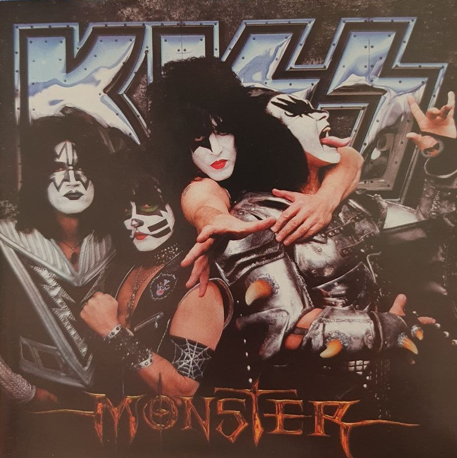 |
2012, Europe, жанр Rock |
| 116. Krokus | Hoodoo | Sony Music 88697649432 |
5,56 USD | 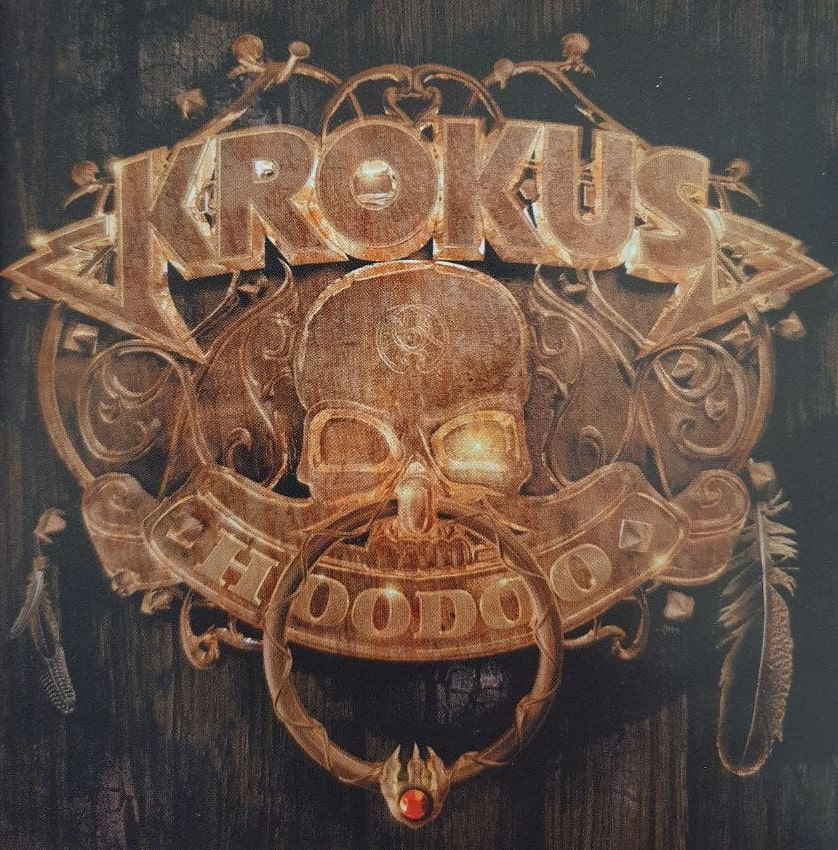 |
2011, US, жанр Rock |
| 117. Led Zeppeling | Led Zeppeling 3 и 4 | Not On Label none |
1 USD |  |
Russia, жанр Rock (самодельный) |
| Lenny Kravitz | Black And White America | Roadrunner Records – RR7704-2 Runout:[Warner Music logo] 168617704-2 V01 FNJ |
3 USD |  |
2011,Europe,жанр Rock, Funk / Soul стиль: Pop Rock |
| Lindsey Buckingham | Seeds We Sow | Mind Kit Records – LB0001 – LB0001,Runout (Variant 2): A01 DIDX-767627 1,Mastering SID Code (Variant 2): IFPI L327,Mould SID Code (Variant 2): IFPI 50AB |
4,85-12,62 USD |  |
2011г,US,жанр Rock, Pop ,стиль: |
| 118. Lynyrd Skynyrd | God & Guns.1 | Roadrunner Records RR 7859-2 |
5,37 USD |  |
2009, Europe, жанр Rock |
| Last Of A Dyin' Breed*.2 | Roadrunner Records 1686 176442,Runout: Z113602 3 176442-2 01 M1S1,Mastering SID Code: IFPI L909Mould SID Code: none, |
1- 4,88 USD |  |
2012,Russia-PIRAT,жанр Rock стиль: Southern Rock | |
| 119. Madonna | MDNA | Interscope Records 0602527968155 |
4,61 USD | 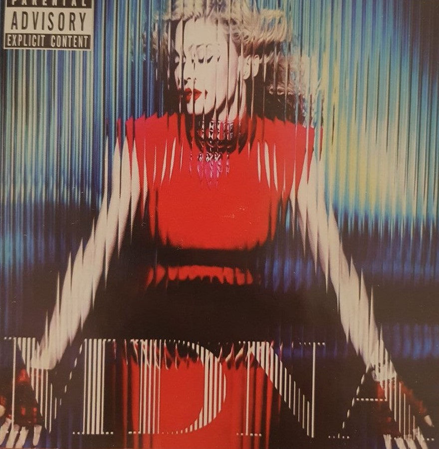 |
Europe, жанр Electronic, Pop |
| 120. Make Some Noise | The Amnesty International Campaign To Save Darfur | Warner Bros. Records 9362-49963-0 |
4,94 USD |  |
2007, Europe, жанр Electronic, Hip Hop, Rock, Reggae, Latin, Funk / Soul, Pop (2 x CD, Compilation, Digisleeve) |
| 121. Manfred Mann's Earth Band | Nightingales & Bombers.1 | Petbrook ltd. MANN 008 |
12 USD |  |
1999, жанр Rock |
| Somewhere In Afrika.2 | Petbrook ltd. MANN 013 |
12,09 USD |  |
1999, UK & Europe, жанр Rock | |
| The Good Earth / Chance.3_bronze | CD-Maximum – CDM 598-107 Runout:171306-NEXT |
1-5 USD |  |
1999(1974-1999),For sale in Russia only,жанр Rock стиль:Pop Rock, Prog Rock, Classic Rock | |
| 122. Marc Bolan And T-Rex | The Ultimate Collection | Not On Label (Marc Bolan) CD 056 G |
1 USD |  |
Russia, жанр Rock, Pop |
| Marcus Miller | In Concert | in-akustik – INAK 6502-2 DVD Runout: |
1-10 USD |  |
2002,совсем ЛЕВЫЙ-Germany,жанр Jazz стильFusion, Jazz-Funk, Contemporary Jazz: |
| Mark Knopfler | Get Lucky | Vertigo – 2708674 Runout: 06025 270 867-4 01 + 52377428 |
3 USD |  |
2009,Europe, жанр Rock,стиль: Soft Rock |
| 123. Matt Bianco | Hifi Bossanova | Victor VICP-64705 |
6,79 USD |  |
2009, Japan, жанр Jazz, Latin |
| Michael Jackson | Michael | Epic,Sony Music,MJJ Music – 88697 82867 2 Runout-Variant6:Sony DADC A0101702463-0101 41 A00 MasteringSIDCode-Variant6:IFPI L551 |
3,5-4 USD |  |
2010,Europe,жанр Electronic, Funk/Soul,Pop стиль: RnB/Swing, Pop Rock, Ballad, Synth-pop, Dance-pop |
| 124. Mick Jagger | Goddessinthedoorway | H Records 7243 8 11288 2 4 |
2,20 USD |  |
2001, Europe, жанр Rock |
| 125. Mike Oldfield | Voyager | WEA 0630-15896-2 |
2,89 USD |  |
1996,Europe, жанр Electronic, Rock |
| Crises | Disky –VI 863002 матрица:SYM 00068 |
1 USD |  |
1983,Russia-PIRAT,жанр Electronic, Rock-стиль Pop Rock, Experimental | |
| 126. Molly Hatchet | Justice | Steamhammer SPV 308232 CD |
10,99 USD |  |
2010, Germany, жанр Rock |
| 127. Morcheeba | The Antidote | Echo |
2,68 USD |  |
2005, Europe, жанр Electronic, Pop |
| 128. Mountain | Climbing! | Columbia CK 86577 |
3,70 USD | 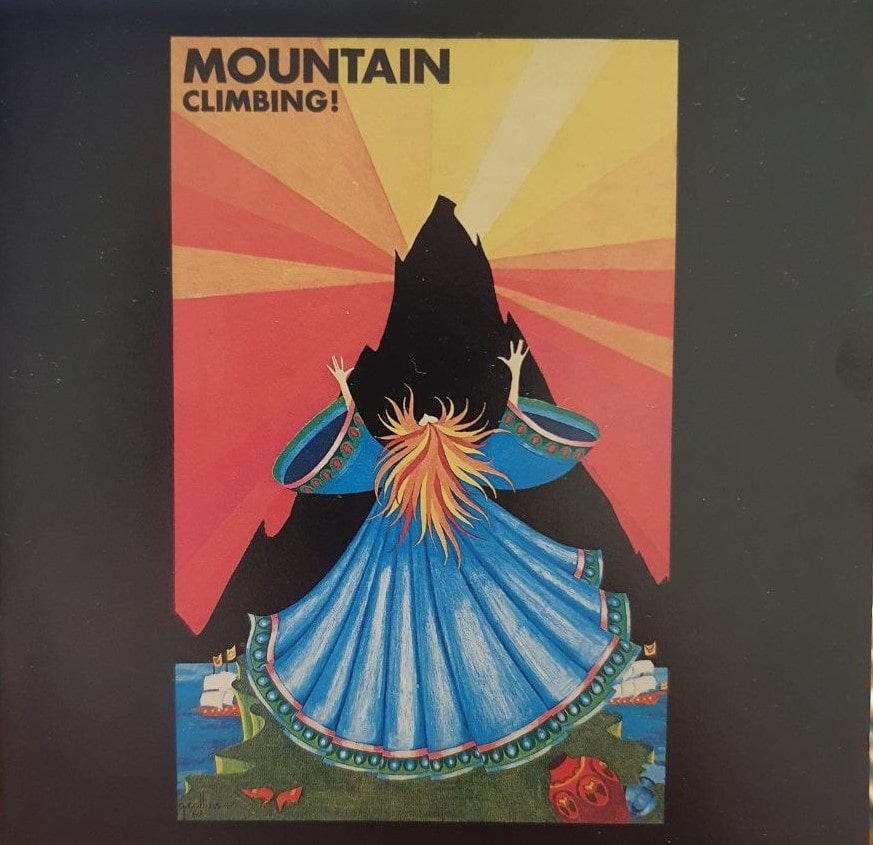 |
2003, US, жанр Rock |
| 129. MSG, Schenker - Barden | In The Midst Of Beauty | in-akustik INAK 9085 CD |
6,59 USD |  |
2008, Germany, жанр Rock |
| 130. Mudcrutch | Mudcrutch | Roadrunner Records 9362-49873-3 |
9,99 USD | 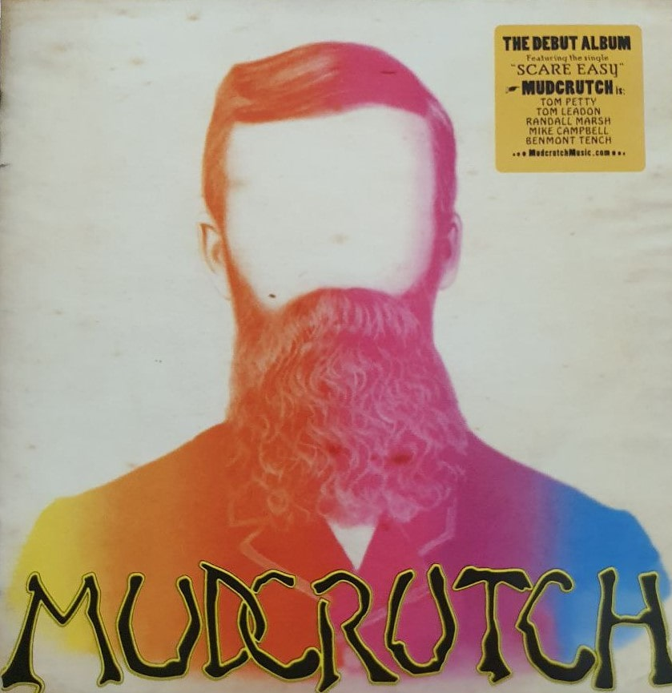 |
2008, Europe, жанр Rock |
| 131. Murder By Death | Red Of Tooth And Claw | Vagrant Records – VR494 матрица:70945AM-01 VAG4942 121807-(03) |
5 USD |  |
2008,US,жанр Rock -стиль Folk Rock, Blues Rock, Indie Rock |
| 132. Muse | Futurism | Warner Bros.Records 825646874677 Runout: 404 83429017-01 |
1- USD | 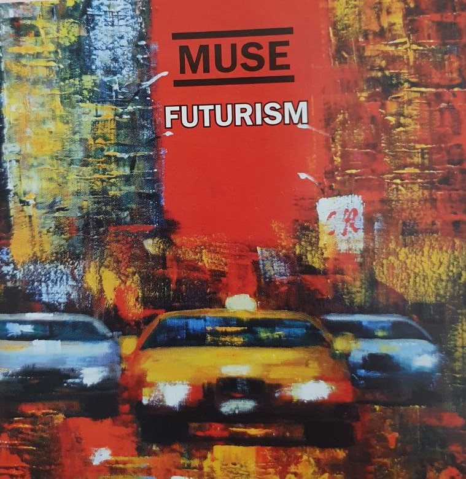 |
2010, Russia-PIRAT, жанр Rock стиль: Alternative Rock |
| 133. Neil Young | Fork In The Road | Reprise Records 9362-49787-5, Runout: 936249787-5 V01 COV,Mastering SID Code: IFPI L011 |
1 USD |  |
2009,Russia-PIRAT,жанр Rock стиль:Country Rock, Grunge, Classic Rock |
| 134. Neil Young With Crazy Horse | Americana | Reprise Records 531195-2 |
3 USD |  |
2012, US, жанр Rock, Folk, World, & Country |
| 135. Nick Cave & The Bad Seeds | Dig, Lazarus, Dig!!! | Mute CDSTUMM277 |
4,39 USD |  |
2008, Europe, жанр Rock, Blues |
| 136. Nickelback | All The Right Reasons | Roadrunner Records RR80882Runout:OL0518левый, |
1 USD |  |
2005,?левый, жанр Rock, Pop стиль:Alternative Rock |
| 137. Otis Taylor | Recapturing The Banjo | Telarc Blues CD-83667 Runout:D008 CTDX-003344 |
1-6,50 USD |  |
2008,US-левый,жанр Jazz,Blues Стиль:Country Blues |
| 138. P.J.Harvey | Uh Huh Her | OR3624 |
2 USD |  |
жанр Rock |
| 139. Paul McCartney | Flaming Pie.1 | MPL 7243 8 57523 2 2 |
5-10 USD |  |
1997, Europe, жанр Rock, Pop стиль: |
| Memory Almost Full.2 | MPL 8072303584 088 Runout:06669 990 027-8 01 * 51895496-Mould SID Code: IFPI 0141 |
1-8 USD |  |
2007,Russia-PIRAT,жанр Rock, Non-Music, Pop стиль: Pop Rock, Speech, Classic Rock | |
| Electric Arguments.3 группа The Fireman | One Little Indian –tplp1003cd |
1-5 USD |  |
2008,Russia-PIRAT,жанр Electronic, Rock стиль Folk Rock, Psychedelic Rock, Pop Rock, Ambient | |
| Ram.4 | MPL –0777 7 89139 2 4,Runout-8:789139 2 @ 2 1-1-16-NL,MouldSIDCode-Variant8:ifpi 151A |
9 USD |  |
1993релиз/1971альбом,Europe,жанр Rock стиль:Pop Rock | |
| Kisses On The Bottom.5 | HearMusic,ConcordMusicGroup,UniversalMusic – HRM-33369-02,Runout:08880 723 336-9 01 * 52867555[4Universal logo]MasteringSIDCode:IFPI LV26 |
1-10 USD |  |
2012,Russia-Pirat,жанр Jazz, Pop, Stage & Screen стиль: | |
| London Town Tug Of War.6 Wings (2) | AIR Ltd. – AIR 69341,Runout:None |
1 USD |  |
1996,Самописанный,жанр Rock стиль:Pop Rock, Classic Rock | |
| 140. Paul Rodgers | Electric | Not On Label (Paul Rodgers) 21207 S2 |
1 USD |  |
2000, Russia, жанр Rock |
| 141. Paul Simon | So Beautiful Or So What | Hear Music – 0888072328143 матрица: 08880 723 281-4 01 + 52685412 |
2 USD |  |
2011,Europe,жанр Rock, Pop, Folk, World, & Country,-стиль Folk Rock |
| 142. Pavlov's Dog | Collection (2 CD) | 2000 Fruit Gum FCCD 75901/76772 |
1 USD |  |
2004, Russia, жанр Rock |
| 143. Pearl Jam | Backspacer | Monkeywrench Records 2716317 |
5,47 USD |  |
2009, Europe, жанр Rock |
| 144. Peter Frampton | Thank You Mr Churchill | New Door Records B0014000-02 |
4,25 USD |  |
2010, US, жанр Rock, Pop |
| Peter Gabriel | Up | Not On Label (Peter Gabriel) – none Runout:LXZ08152 |
1 USD |  |
2002,Russia-PIRAT++, жанр Electronic,Rock ,стиль: Downtempo, Pop Rock, Synth-pop |
| 145. Jean-Luc Ponty | Individual choice | Atlantic 7 80098 - 2 |
7 USD |  |
1983, US, жанр Electronic, Jazz, Rock |
| Acatama experience | Koch KOC-CD-4233 |
16 USD |  |
2007,US, жанр Jazz | |
| Experience | One Way Records S21 17372 |
20 USD |  |
1993,US, жанр Jazz | |
| Storytelling | Columbia CK 45252 |
3,5 USD |  |
1989,US, жанр Electronic, Jazz, Rock | |
| Tchokola | Epic 468522 2 |
5,6 USD |  |
1991,Netherlands, жанр Jazz, Folk, World, & Country | |
| 146. Porcupine Tree | The Incident | Roadrunner Records RR 7857-2 |
15,14 USD |  |
2009, UK & Europe, жанр Rock (должно быть 2 диска, в коробочке 1) |
| 147. Pretenders | Break Up The Concrete | Shangri-La Music 101009 |
4 USD |  |
2008, US, жанр Rock |
| 148. Procol Harum | Grand Hotel.1 | Repertoire Records REP 4916 |
7,97 USD |  |
2000, Europe, жанр Rock |
| Shine on Brightly.2 | Repertoire Records REP 4667-WY |
1 USD |  |
1997, Russia, жанр Rock | |
| The well's on fire.3 | Eagle Records EAGCD209 |
6,06 USD |  |
2003, Germany, жанр Rock | |
| Exotic Birds and Fruit.4 | ООО"Дора" JPCD9705318 |
продан=0,5 usd |  |
1997, Russia-PIRAT, жанр Rock | |
| 149. Queen + Paul Rodgers | The Cosmos Rocks.1 | Repertoire Records REPUK 1098 |
11 USD |  |
2008, Europe, жанр Rock |
| 149. Queen + Paul Rodgers | The Cosmos Rocks.1 | Repertoire Records REPUK 1098 |
11 USD | |
2008, Europe, жанр Rock |
| 150. Radiohead | The King Of Limbs | XL Recordings – TICK001CD матрица:8258 - TICK001 021811 |
4,4 USD |  |
2011,US,жанр Electronic,Rock -стиль Abstract, Downtempo, Experimental |
| 151. Rainbow | Ritchie Blackmore's Rainbow*.1 | Polydor UICY-9190 A,Runout:POCY-3011- 1K V,Mastering SID Code: IFPI L237,Mould SID Code:None |
1-редкость USD |  |
1975альбом/2002релиз.,Russia-PIRAT,жанр Rock стиль: Hard Rock, Classic Rock |
| Straight between the eyes.2 | Polydor 521 709-2 |
1 USD |  |
Russia, жанр Rock | |
| Long Live Rock 'N' Roll.3 | Polydor UICY-9193, |
USD |  |
2001,Japan,жанр Rock | |
| Bent of shap.4e | Polydor 815 305-2 |
6,18 USD |  |
Europe, жанр Rock | |
| 152. Ray Davies | Working Man's Café.1 | New West Records NW6136 Runout:70780BM-01 NW6136 010308-(01)MouldSIDCode:IFPI ZN1KPressing Plant ID(Mouldednearspindlehole):MCOM |
3-9 USD |  |
2008, US, жанр Rock стиль:Rock & Roll, Pop Rock |
| Other People's Lives.2 | Universal Records 0602498602980 |
3,00 USD |  |
2006, US, жанр Rock, Pop | |
| See My Friends.3 | Universal Music TV – 2754817 Runout:06025 275 481-7 01 + 52633644/Mastering SID Code: IFPI LV27 |
5,32 USD |  |
2010,Europe,ОРИГИНАЛ!! жанр Rock,стиль: | |
| 153. Ray Manzarek / Roy Rogers | Translucent Blues | Blind Pig Records BPCD 5140 |
10,49 USD |  |
2011, US, жанр Blues, Jazz, Rock |
| 154. Red Hot Chili Peppers | By The Way | Warner Bros. Records none |
1 USD |  |
2002, Russia, жанр Rock |
| 155. Redemption | The Origins Of Ruin | Inside Out Music SPV 79412 CD |
7,69 USD |  |
2007, Europe, жанр Rock |
| Return To Forever | Romantic Warrior | Columbia – note Runout:jpcd9710605? |
2 USD |  |
1997г/ориг.релиз 1976г,ООО"Дора"-левый на сайте нет,жанр Jazz стиль: Jazz-Rock, Fusion |
| 156. Richard Bona | Tiki | Par Media Music ZZ-05GP0001955 |
3,28 USD |  |
Russia, жанр Jazz, Latin, Folk, World, & Country |
| Rick Wakeman | The Six Wives Of Henry VIII.1 Оригинал | A&M Records – 393 229-2 Runout-Variant4,on CD mould:MADE IN GERMANY BY PMDC YV, 393 229-2 03 /,IFPI L001+ IFPI 0146 |
10-20 USD |  |
1973,Germany,жанр Electronic, Rock стиль:Modern Classical,Prog Rock |
| Fields Of Green.2 Редкость | Griffin Music – GCD-581-2 Runout:GCD-581-2 |
1-15 USD |  |
1996,??,жанр Rock стиль:Prog Rock, Art Rock | |
| The Myths And Legends Of King Arthur And The Knights Of The Round Table.3 | A&M Records – CD 3230 Runout:BS 038 |
1-15 USD |  |
1988релиз,1975альбом,??,жанр Rock стиль:Prog Rock, Classic Rock | |
| Journey To The Centre Of The Earth- 30th Anniversary Collector's Edition.4 DVD-диск | ФирмаГрамзаписи Никитин – 4670001544986 Runout: |
1-20 USD |  |
2008,Russia,жанр Rock стиль:Prog Rock | |
| 157. Ringo | Ringo 2012 | Universal Music Group International 0602527918020 |
1 USD |  |
2012, Russia, жанр Rock |
| Ringo Rama Deluxe Edition | Koch Records KOC-CD-9533 (нет), KOC-CD-9533A, KOC-CD-9533B |
28,72 USD |  |
2003, US, жанр Rock, Non-Music, Pop | |
| Y Not | Hip-O Records B0013792-02 |
4,38 USD |  |
2010, US, жанр Rock, Pop | |
| Choose Love | Eagle Records EDL EAG 308-5 |
1 USD |  |
2005, Russia, жанр Rock, Pop | |
| Liverpool 8 | Capitol Records 509995 17388 22 |
6,75 USD |  |
2008, Europe, жанр Rock, Pop | |
| 158. Robbie Robertson | How To Become Clairvoyant | Macrobiotic Records FTN17821 |
3,89 USD |  |
2011, US, жанр Rock |
| 159. Robby Krieger | Singularity | Oglio Records OGL89160-2 |
9,89 USD |  |
2010, US, жанр Jazz, Rock |
| 160. Robert Plant | Band Of Joy | Decca 2742241 |
4,40 USD |  |
2010, Europe, жанр Rock, Folk, World, & Country |
| The Principle Of Moments / Pictures At Eleven | Angel International Records AIR 69304 |
1 USD |  |
1996, Europe, жанр Rock | |
| Mighty Rearranger | Sanctuary SANCD356 |
5,62 USD |  |
2005, Europe, жанр Rock | |
| Dreamland (самодельный) | 1 USD |  |
|||
| Robin Trower | Twice Removed From Yesterday/Bridge Of Sighs.1/1 | BGO Records – BGOCD339 Runout:SPBGOCD339 и 2а: IFPI ? |
11-20 USD | .jpg) |
1996,?? ,жанр Rock стиль:Blues Rock |
| Another Days Blues.2 | V-12 Records– 501010 – 501010 Runout:GP-06 GT 000465 |
1-10 USD |  |
2005,Russia-PIRAT,жанр Rock стиль:Blues Rock | |
| The Playful Heart.3 | V-12 Records – 501130 – 501130 Runout:AA-MVD-1865 |
1-10 USD |  |
2010,Russia-PIRAT ,жанр Rock стиль: Classic Rock, Blues Rock | |
| What Lies Beneath.4 | V12 Records – 501125 Runout:B468-NEW-AA-MVD-1332 CD |
1-10 USD |  |
2009,Russia-PIRAT,жанр Rock стиль:Blues Rock, Post Rock | |
| For Earth Below Live.5 | BGO Records – BGOCD347 Runout:SPBGOCD347Mastering SID Code: IFPI LP76 Mould SID Code (Mirrored): IFPI 7306 |
11,25-20 USD |  |
1997,UK ,жанр Rock стиль: Blues Rock, Psychedelic Rock | |
| Caravan To Midnight Victims Of The Fury.6 | BGO Records – BGOCD352 Runout:CA SPBGOCD352 @ FPI L039 04/23/07 07:15:44 PM Mastering SID CodeVariant1:IFPI L039Mould SID CodeVariant1:IFPI 1285 |
10-20 USD |  |
2007,Europe,жанр Rock стиль: Blues Rock, Hard Rock | |
| Twice Removed From Yesterday/Bridge Of Sighs.7/1 | ООО "Дора" №2132/М3-97 от 20.01.97заявка№423 Runout:JPCD9707450 |
1-15 USD | |
1997,Russia-Дора,жанр Rock стиль:Blues Rock | |
| Long Misty Days In City Dreams.8 | BGO Records – BGOCD349 Runout-Variant1:CA SP BGOCD349 @ 03/23/07 03:08:06 PM Mould SID Code-Variant1:IFPI 1261,Mastering SID Code-Variant1:IFPI L039 |
10,87-20 USD | .jpg) |
2007,UK,жанр Rock, Blues стиль:Hard Rock, Classic Rock, Blues Rock | |
| Long Misty Days In City Dreams.9 | ООО"Дора"Records – JPCD9709538Runout: – JPCD9709538 |
1-15 USD | |
1997,Russia-№ 2132/МЗ-97лиц.соглаш.РАОиООО"ДОРА"от20.01.97.Заявка№522 ,жанр Rock стиль:Blues Rock,Hard Rock | |
| B.L.T. Truce .10 | BGO Records – BGOCD411 Runout:SPBGOCD411 молдинг IFPI7311,на дискеIFPI LP76 |
1-10 USD |  |
1998,UK жанр Rock,Blues стиль:Blues Rock, Hard Rock | |
| Seven Moons.11 | V-12 Records– 501112 – 501112 Runout:GP-08 GT 0001030 |
1-10 USD |  |
2008,Russia-PIRAT,жанр Rock стиль:Blues Rock | |
| 161. Rod Stewart | Tonight I'm Yours.1 | Warner Bros. Records 7599-23602-2 |
5,63 USD |  |
Germany, жанр Rock |
| When We Were The New Boys.2 | Warner Bros. Records 9362-46792-2 |
1,81 USD |  |
1998, Europe, жанр Rock | |
| Soulbook.3 | Sony Music,J Records – 88697 30256 2 Runout: [Arvato Digital Services logo]53865318/88697302562 21 |
4 USD |  |
2009,Europe,жанр Rock, Funk / Soul, Pop,стиль Pop Rock, Soul | |
| 162. Ron Blake | Shayari | Mack Avenue MAC 1036 |
3,49 USD |  |
2008, US, жанр Jazz |
| 163. Ronnie Wood | I Feel Like Playing | Eagle Records EAGCD428 |
4,15 USD |  |
2010, Germany, жанр Rock |
| 164. Rush | Clockwork Angels | Roadrunner Records |
5 USD |  |
2012, US, жанр Rock |
| Snakes & Arrows | Atlantic 135484-2 |
5,89 USD |  |
2007, US, жанр Rock | |
| 165. Sade | Soldier Of Love | Sony Music 88697639332 |
1,84 USD |  |
2010, EU, жанр Funk / Soul |
| 166. Sammy Hagar | Cosmic Universal Fashion | Roadrunner Records RR 7891-2 |
4,95 USD |  |
2008, Europe, жанр Rock |
| 167. Santana | All that i am | Arista OL 0507 |
2 USD |  |
2005, EU, жанр Rock, Latin |
| Abraxas / Amigos | ENIMS-BC BGCD 03014-3 |
10,99 USD |  |
1995, Russia, жанр Rock, Latin, Blues | |
| Shape Shifter | Starfaith 76692 99966 2 |
5,31 USD |  |
2012, Europe, жанр Rock, Latin | |
| Guitar Heaven: The Greatest Guitar Classics Of All Time | Arista 88697-772072 матрица:54291182/88697772072-1 21 |
1 USD |  |
2010,Russia-PIRAT,жанр Rock | |
| 168. Scars On Broadway | Scars On Broadway | Interscope Records B0011592-02 |
4 USD |  |
2008, US, жанр Rock |
| 169. Scorpions | Pure Instinct | EastWest 0630-14524-2 |
6,47 USD |  |
1996, Germany, жанр Rock |
| Serj Tankian | Elect The Dead | Reprise Records/Serjical Strike Records – 9362-49928-5 Runout: 936249928-5.2 V01 CAM |
1 USD |  |
2007,Russia-PIRAT,жанр Rock стиль: Alternative Rock, Art Rock, Experimental |
| 170. Siouxsie | Mantaray | W14 Music 173 995-5 |
7,96 USD | 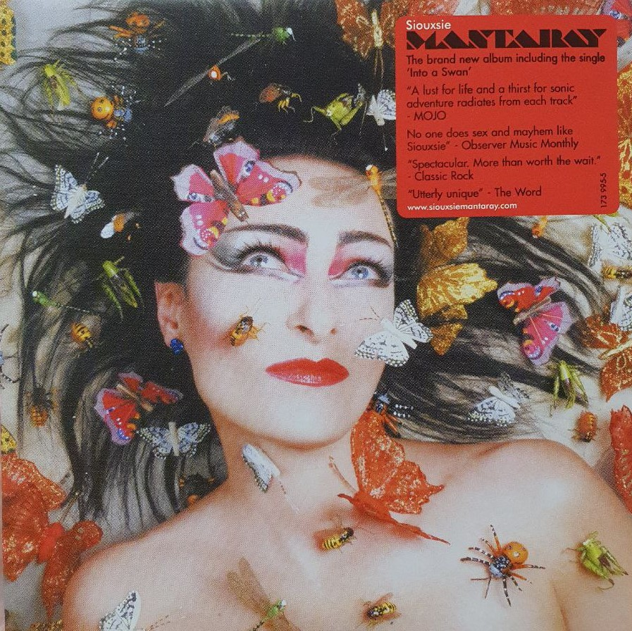 |
2007, Europe, жанр Rock, Pop |
| 171. Slash | Slash | Roadrunner Records RR 7795-2 |
2,99 USD | 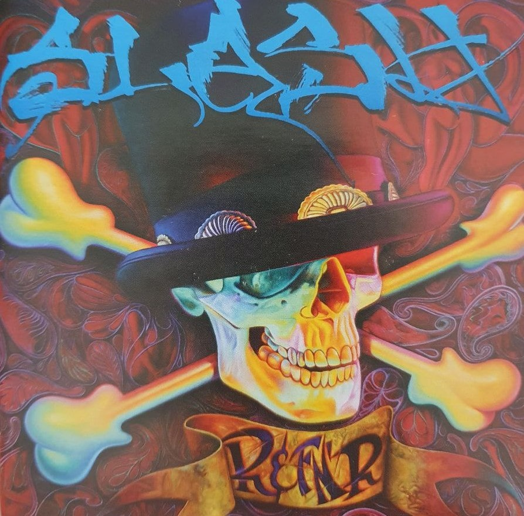 |
2010, Europe, жанр Rock |
| 172. Soundgarden | Telephantasm | A&M Records 00602527442167,Runout: 06025 274 421-6 01 + 526111289,Mastering SID Code: IFPI LV27 |
1-5 USD | 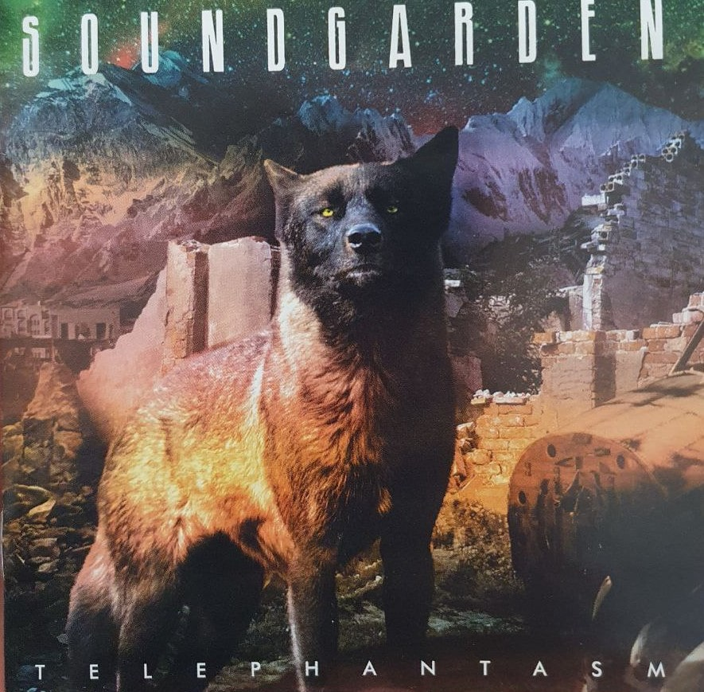 |
2010,Russia-pirat,жанр Rock стиль: Alternative Rock, Grunge |
| 173. Spirit | Spirit | Mercury 836 948-2 |
1 USD | 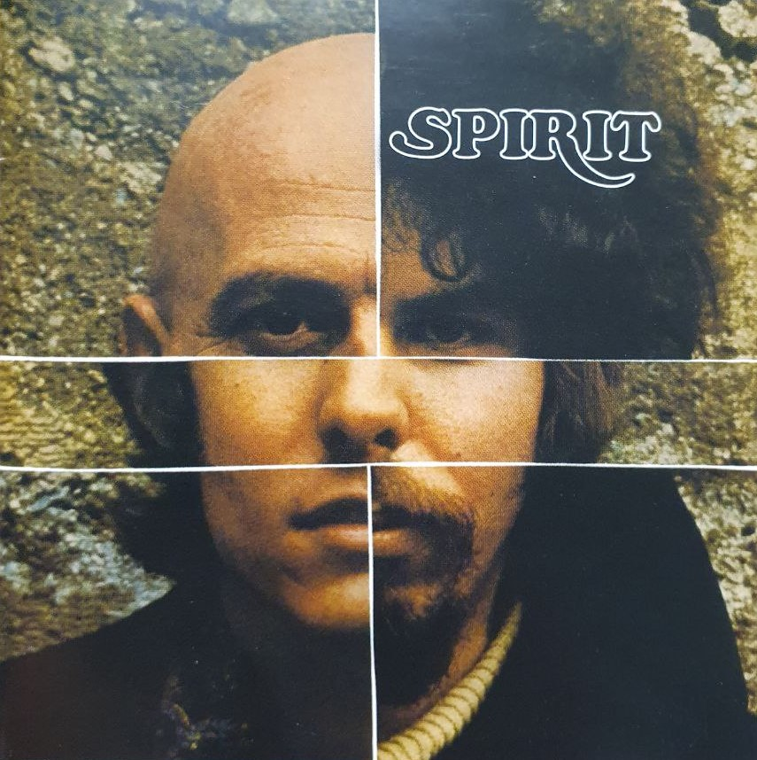 |
жанр Rock |
| Spooky Tooth | Spooky Two | Repertoire Records – REPUK 1061,Runout(Variant 4):Sony DADC A0100601498-0101 15 A 0,MasteringSIDCode(Variant4):IFPI L555,MouldSIDCode(Variant4):IFPI 94Y5?(94k7надиске) |
10,49-25 USD |  |
2005г (1969г),Europe,жанр Rock,стиль:Prog Rock, Blues Rock |
| Squirrel Nut Zippers | Lost At Sea | Hillbilly Productions – SB01 Runout:MTI0610 3412-CD-2587 09-263-05 |
15 USD |  |
2009г, US,РЕДКОСТЬ! жанр Jazz, Rock стиль: Dixieland, Swing |
| 174. Status Quo | In Search Of The Fourth Chord | Edel Records 0184392ERE |
3,85 USD |  |
2007, Europe, жанр Rock |
| Quid Pro Quo | Ear Music – 0206176ERE Runout:manufactured by optimal media production AB36977-01 |
1 USD |  |
2011,Russia-PIRAT,жанр Rock,стиль: Hard Rock, Classic Rock | |
| 175. Steppenwolf | At Your Birthday Party | MCA Records MCAD-1668 |
6 USD |  |
US, жанр Rock |
| Monster | MCA Records MCAD-31328 |
5 USD | 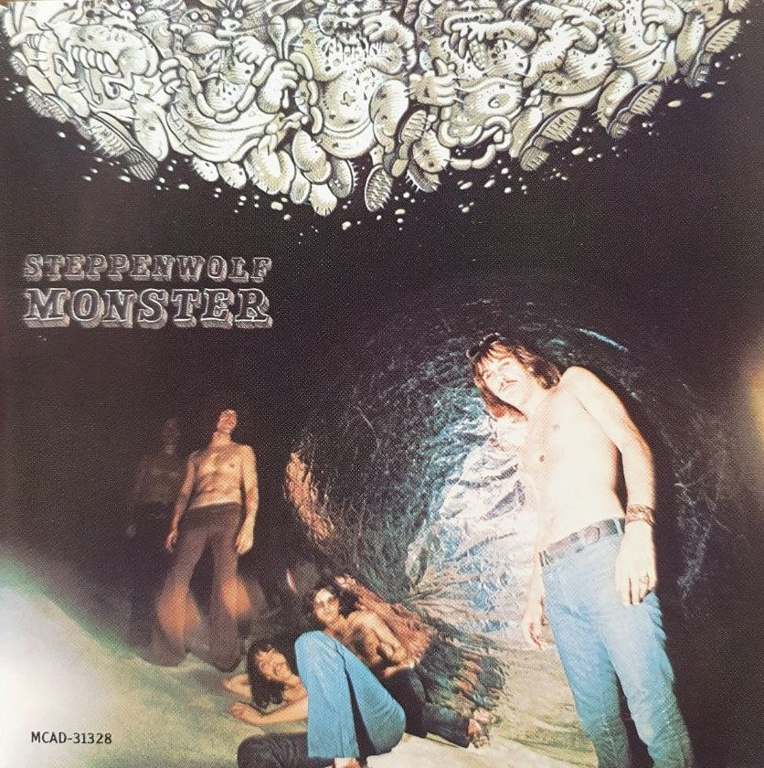 |
US, жанр Rock | |
| The second | MCA Records MCAD-31021 |
6,50 USD |  |
US, жанр Rock | |
| Steppenwolf 7 | MCA Records – MCAD-1598 матрица:MCA D15 98 0!! A |
7 USD |  |
1970,US,жанр Rock -стиль Classic Rock | |
| 176. Steve Hackett | Out Of The Tunnel's Mouth | Inside Out Music 0505388 |
11,67 USD |  |
2010, Germany, жанр Rock |
| 177. The Steve Miller Band | Let Your Hair Down.1 | Space Cowboy Records RR 7718-5 |
? USD |  |
2011,Russia, жанр Rock, Blues |
| Bingo!.2 | Loud & Proud Records 1686-177592, Runout: Y27239 M1S7 3177592-2 01 |
1- 5,94 USD |  |
2010, ?, жанр Rock,Blues стиль: Blues Rock | |
| Fly like an eagle.3 | Not On Label (Steve Miller Band) GP-76ZZ0001457 |
? USD |  |
2000, Russia, жанр Rock, Blues | |
| The Joker.4 | Not On Label (Steve Miller Band) GP-73220001447 |
1 USD |  |
2000, Russia, жанр Rock | |
| 178. Steven Wilson | The Raven That Refused To Sing (And Other Stories) | Kscope KSCOPE242 |
7,50 USD |  |
2013, Europe, жанр Rock |
| Sting | The Living Sea (Soundtrack From The IMAX Film) | A&M Records – 540 350-2 Runout:540 350-2 01 + MADE IN GERMANY BY PMDC IFPI L002 |
4,25 USD | .jpg) |
1995,Germany ORIGINAL!!,жанр Electronic, Rock, Stage & Screen стиль: Soundtrack |
| 179. Stone Gods | Silver Spoons & Broken Bones | PIAS UK SG004 |
8,74 USD |  |
2008, EK, жанр Rock |
| Submersed | In Due Time | Wind-Up – 60150-13074-2 – 60150-13074-2 Runout: 60150130742 1N 21 |
4,66 USD |  |
2004,US,жанр Rock стиль: Alternative Rock, Grunge |
| 180. Stone Temple Pilots | Stone Temple Pilots | Atlantic 519419-2 |
7 USD |  |
2010, US, жанр Rock |
| 181. Sundance | Sundance | Fallout -FOCD2030 матрица:FOCD2030 215499 01 |
12 USD | 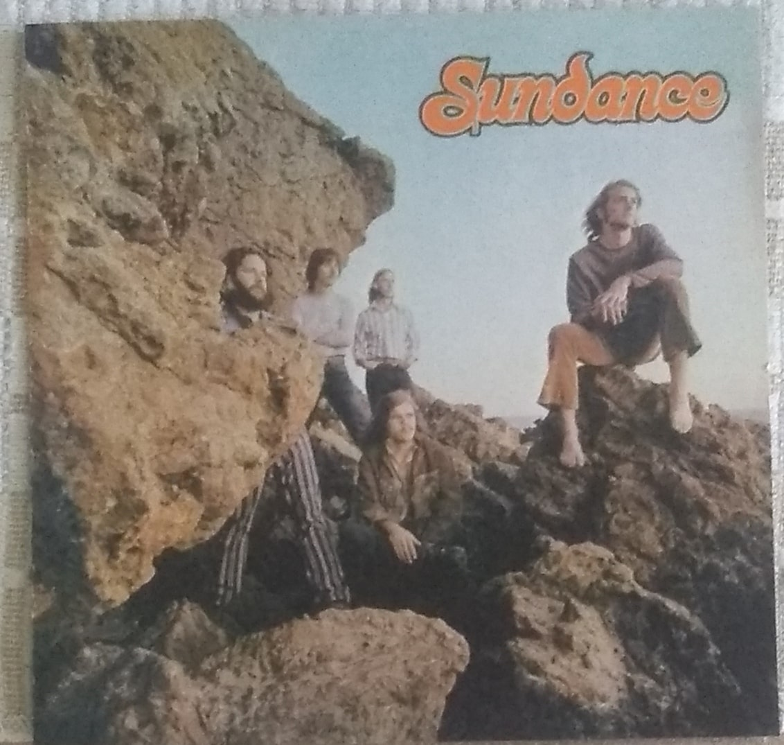 |
2007,UK,жанр Rock-стиль Blues Rock, Country Rock, Hard Rock, Folk Rock |
| SuperHeavy | SuperHeavy | Universal Republic Records – B0016106-02 Runout: 06025 278 211-8 01 * 52793425/ [Universal logo x4]/ IFPI LV26 |
1 USD | 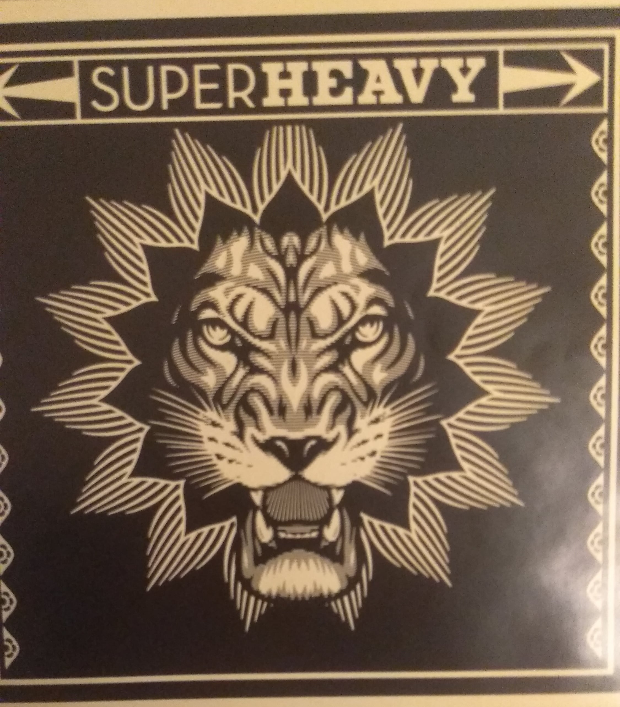 |
2011г, Russia-PIRAT,жанр Rock, Reggae стиль: Pop Rock, Reggae-Pop |
| 182. Supertramp | Some Things Never Change | EMI 489989 2 |
5,50 USD |  |
1997, Europe, жанр Rock |
| Breakfast In America | A&M Records 393 708-2 |
6,04 USD |  |
1989, Europe, жанр Rock | |
| 183. System Of A Down | Mezmerize | Columbia 5015349 Runout: LNG-028 |
1 USD |  |
2005,Russia-Pirat,жанр Rock стиль:Alternative Rock, Thrash, Post Rock, Experimental |
| T. Rex | The Slider | SomeWax Recordings – SW151-2 Runout: SOME WAX [SomeWax logo] T. REX - The Slider SW151-2 |
1 USD |  |
2003 /ориг.релиз 1972г,Russia-PIRAT,жанр Rock стиль: Glam, Pop Rock, Classic Rock |
| 184.The Alan Parsons Project | I Robot.1 | РБСЗС ARCD 8040 |
1 USD |  |
1995, Russia, жанр Rock. |
| Eve.2 | Arista Records 258 981 матрица:RS19146 |
Продано=8,62usd |  |
1990,Europe,жанр Rock-стиль Pop Rock.Продано 25 рублей май 2023г. | |
| 185. The Allman Brothers Band | Hittin' The Note | Peach Records SANCD170 матрица:?? |
USD |  |
2003,ЛЕВЫЙ,жанр Rock, Blues-стиль Blues Rock, Southern Rock |
| 186. The Answer | Rise | Albert Productions JASCDUK045P |
6,24 USD |  |
2007, UK, жанр Rock, Blues |
| Revival | Spinefarm Records – 0602527799698 Runout: 06025 277 996-9 01 + 52783337 |
1 USD |  |
2011,Russia-PIRAT,жанр Rock стиль: Hard Rock | |
| 187. The Coral | Magic And Medicine | Deltasonic Records 512560 2 |
2,31 USD |  |
2003, UK & Europe, жанр Rock |
| The Invisible Invasion | Deltasonic Records MV 0505003 |
1 USD |  |
Russia, жанр Rock | |
| 188. The Cranberries | Roses | Cooking Vinyl COOKCD552 Runout: >COOKCD552 Z2111H SOUND PERFORMANCE |
1 USD |  |
2012,Russia-PIRAT,жанр Rock стиль:Alternative Rock, Pop Rock |
| 189. The Darkness | Hot Cakes | Wind-Up – 60150-13344-2 матрица: 601501334429 |
6 USD |  |
2012,US,жанр Rock-стиль Hard Rock, Arena Rock,Glam |
| Permission To Land | Atlantic, Must... Destroy!! – 8 2564-60817-2 1/ – 8 2564-60817-2 1 Runout:[wea mfg. OLYPHANT]Z18822 3 60817-2 01 CI/CA *M2 S6 |
2,4 USD |  |
2003,US,жанр Rock-стиль Hard Rock, Arena Rock, Glam | |
| The Dead Weather | Horehound | Runout: |
1 USD |  |
,,жанр Rock,стиль:Hard Rock |
| The Flower Kings | The Sum Of No Evil CD 2шт. | Inside Out Music – IOMSECD 285 Runout:] 52360268/79622 22 CD1/] 52386736/79620 21 |
1 USD |  |
2007г,Russia-PIRAT,жанр Rock стиль: Prog Rock |
| 190. The Dead Weather??ПРОВЕРИТЬ Соответствие диска и коробки | Horehound | Third Man Records 519785-2 Runout(Variant7):Z71862 1 519785-2 TEXT 01 M1S5,Mastering SID Code (Variants 1 to 7): ifpi L909-2раза,Mould SID Code-None? |
2,20 USD |  |
2009,? USA, жанр Rock |
| Sea Of Cowards | Third Man Records 2-524033 |
6,57 USD |  |
2010, US, жанр Rock | |
| 191. The Guess Who | All This For A Song | 2000 Fruit Gum |
6,25 USD |  |
2007, Australia, жанр Rock |
| The John Scofield Band | überjam | Verve Records – 3145893562 Runout: 314 589 3562R1 01$ A |
4 USD |  |
2002,US, жанр Jazz ,стиль:Fusion |
| 192. The Kinks | Lola Versus Powerman And The Moneygoround, Part One | SomeWax Recordings SW334-2 |
1 USD |  |
2008, Russia, жанр Rock |
| 193. The Mars Volta | De_Loused In The Comatorium | Universal Records 0602498602980 |
4,34 USD |  |
2003, Europe, жанр Rock |
| The Mick Fleetwood Band | Something Big | Sanctuary – SANCD311 Runout:de luxe SANCD311 01 |
4,3 USD |  |
2004,Europe,жанр Rock стиль:Blues Rock |
| 194. The Moody Blues | A Question Of Balance | ООО "ДОРА" – JPCD9710587 матрица: |
1 USD |  |
1997,ООО"Дора",жанр Rock, Blues -стиль Psychedelic Rock, Blues Rock, Art Rock |
| 195. The Rolling Stones | Voodoo Lounge.1 | Virgin 7243 8 39782 2 9 |
3,76 USD |  |
1994, Italy, жанр Rock |
| Bridges To Babylon.2 | Virgin 7243 8 44909 2 8 |
5,53 USD |  |
1997, Italy, жанр Rock | |
| No Security.3 | 3,34 USD |  |
1998, Europe, жанр Rock | ||
| Out Of Our Heads.4 | ABKCO 882 319-2 |
7,12 USD |  |
2002, Europe, жанр Rock, Blues | |
| Let It Bleed.5 | ABKCO 844 473-2 |
5,06 USD |  |
Europe, жанр Rock | |
| Steel Wheels / Singles Collection IV.6 | CD-Maximum CDM 0999-317 |
1 USD |  |
1999, Russia, жанр Rock | |
| Between The Buttons.7 | SomeWax Recordings SW139-2 |
1 USD |  |
2003, Russia, жанр Rock | |
| A Bigger Bang.8 | Virgin |
1 USD |  |
2005, Europe, жанр Rock | |
| Stripped.9 | Virgin 7243 8 41040 2 3 |
1 USD |  |
1995, Russia, жанр Rock | |
| 196. The Syn | Big Sky | Umbrello Records UMBCD0016 |
1 USD |  |
Russia, жанр Rock |
| The Tigerlilies | Ceci N'est Ces Pop | Truckstop,Atavistic – truck29/alp329cd Runout: 01YY5<0241>ALP329CD/: MADE IN CANADA BY AMERIC DISC |
1-3 USD |  |
2003г,?,жанр Rock стиль:Indie Rock, Pop Rock |
| 197. The Wallflowers | Glad All Over | Columbia 88725 45690 2 |
5,48 USD |  |
2012, Europe, жанр Rock |
| 198. The White Stripes | Icky Thump.1 | Third Man Records XLCD271 |
8,79 USD |  |
2007, Russia, жанр Rock |
| Get Behind Me Satan.2 | Third Man Records XLCD 191 |
6,86 USD |  |
2005, Russia, жанр Rock | |
| Elephant.3 | XL Recordings – XLCD 162 Runout:[Sonopress logo]50678612/XLCD162-NEW 01 |
3,23 USD |  |
2003, Europe,жанр Rock стиль: Alternative Rock, Garage Rock, Southern Rock | |
| 199. The Who | Tommy | MCA Records MCAD-11417 |
3,28 USD |  |
1996, US, жанр Rock |
| 200. Them Crooked Vultures | Them Crooked Vultures | DGC B0013783-02 |
5 USD |  |
2009, US, жанр Rock |
| 201. Thin Lizzy | Black Rose (A Rock Legend).1 | Vertigo UICY-9236 |
1 USD |  |
2002, Russia, жанр Rock |
| Johnny The Fox.2 | Vertigo UICY-9233 |
24,75 USD |  |
2002, Japan, жанр Rock | |
| Tipton,Entwistle & Powell | Edge Of The World | Rhino Records – R2 73352 Runout: GP-06 GT 000571 |
1-10 USD |  |
2006г,Russia-PIRAT,жанр Rock стиль: Heavy Metal |
| 202. Titanic | Ashes and Diamonds | Repertoire records Rep5147 |
1 USD |  |
2009,Russia-PIRAT,жанр Rock |
| ToDieFor | All Eternity | ООО Фоно – FO8CD Runout:FO 8 CD ARK SYSTEM |
3 USD |  |
2000,Russia, жанр Rock,стиль: Goth Rock, Heavy Metal |
| 203. Tom Petty And The Heartbreakers | Mojo | Reprise Records 523971-2 |
6 USD |  |
2010, US, жанр Rock |
| Tony Levin_David Torn_Alan White | Levin Torn White | Lazy Bones Recordings – none Runout: LEVIN TORN "WHITE" 876-ED-1423 |
1 USD |  |
2011г,Russia-PIRAT,жанр Jazz, Rock стиль: Fusion, Prog Rock |
| 204. Tool | Lateralus.1 | Tool Dissectional 61422-31160-2 |
11,82 USD | 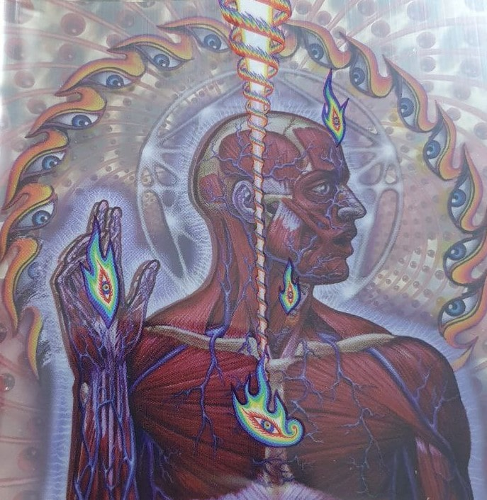 |
2001, US, жанр Rock |
| Ænima.2 | Volcano 61422-31087-2 |
6 USD | 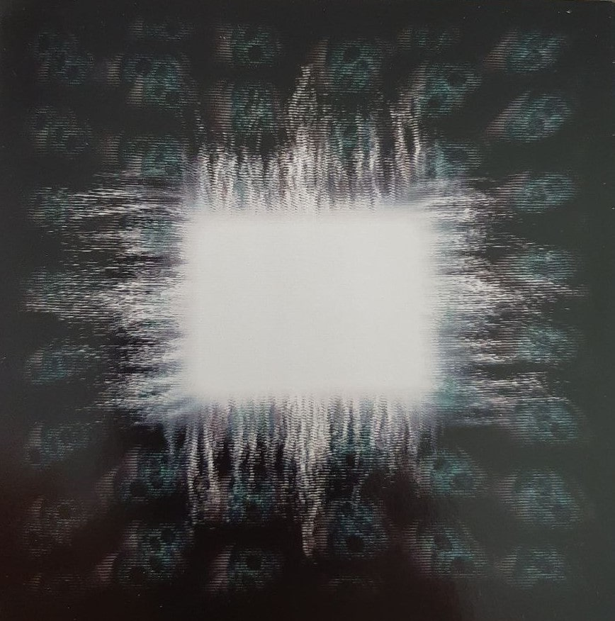 |
1996, US, жанр Rock | |
| 10,000 Days-retail.3 | Volcano – 82876819912,Runout(Variant 2):82876819912[Sonopress Arvato logo] + A04 + F534903,Mastering SID Code (Variant 2): IFPI LB41,Mould SID Code (Variant 2): IFPI 10J23 |
10-25 USD |  |
2006,US,жанр Rock стиль:Art Rock, Prog Rock | |
| 205. Tygers Of Pan Tang | Animal Instinct | Livewire LW024-2 |
1 USD |  |
2008, Russia, жанр Rock |
| 206. U.K. | U.K.* | EG Records – EGCD 35 матрица:787541 @ 1 |
13 USD | 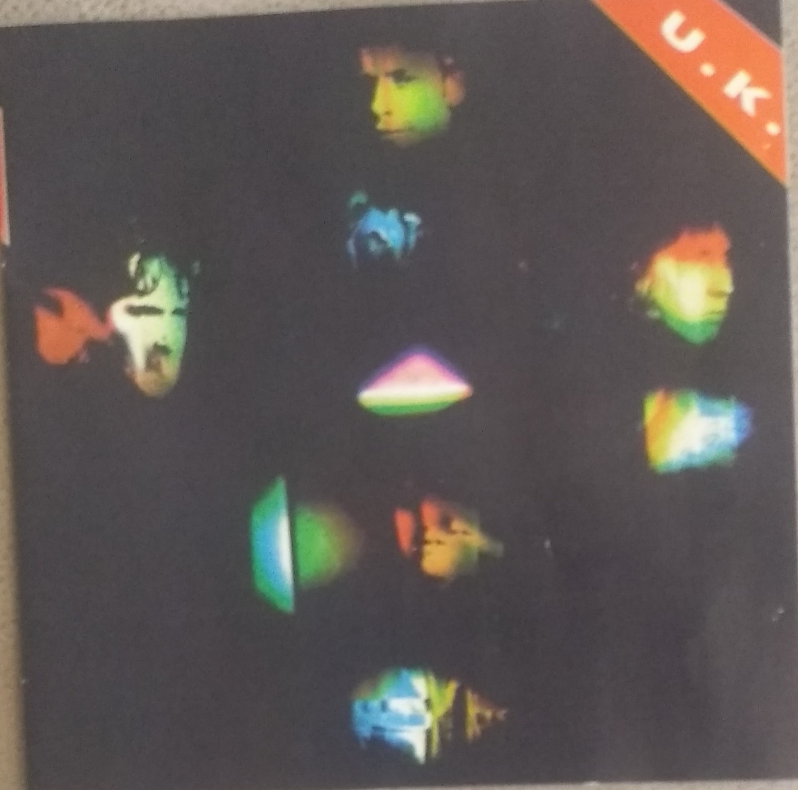 |
1978,US,жанр Rock - стиль Prog Rock |
| 207. U2 | All that you can't leave behind.1 | Island records ENO0040 |
0,5 USD |  |
2000, Russia-PIRAT, жанр Rock |
| No Line On The Horizon.2 | Island Records 1796028 |
3 USD |  |
2009, UK & Europe, жанр Rock, Pop | |
| 208. UFO | Seven Deadly.1 | Steamhammer SPV 309250 CD Ltd.Runout: arvato 54966202/309252 21, |
1- 10 USD |  |
2012,Russia-PIRAT, жанр Rock |
| The Monkey Puzzle.2 | Steamhammer SPV 97792 CD |
1 USD |  |
2006, Germany, жанр Rock | |
| 209. Uriah heep | Wake the sleeper.1 | Sanctuary 1767027 |
11,67 USD |  |
2008, Europe, жанр Rock |
| Sweet Freedom / Fallen Angel.2 | CD-Maximum CDM 198-58 |
1 USD (не продавался еще) |  |
2000, Russia, жанр Rock | |
| 210. Ursa Majory | Ursa Major | BMG Special Products DRC1 2465 |
12 USD |  |
2000, US, жанр Rock |
| 211. Van Halen | A Different Kind Of Truth | Interscope Records 0602527935270 |
11 USD |  |
2012,Europe,жанр Hard Rock |
| 212. Velvet Revolver | Libertad | RCA 82876 88859-2 |
6,99 USD |  |
2007, US, жанр Rock |
| 213. Victor Wooten | Palmystery | Heads Up International HUCD 3135 |
6,30 USD |  |
2008, US, жанр Jazz |
| 214. Warhorse | Warhorse | Angel Air Records SJPCD034 |
9,89 USD | 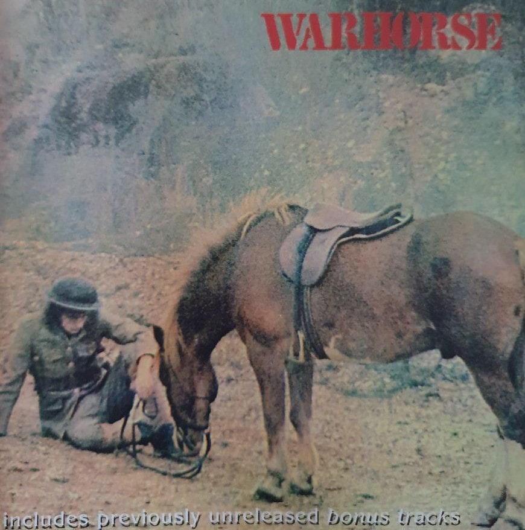 |
1999, UK, жанр Rock |
| 215. David Coverdale / Whitesnake | North Winds / Come An' Get It.1 | CD-Maximum CDM 0799-296,Runout: CDM 0799-296,ifpi LD01? |
1 USD |  |
2001, Russia-Лицензионное соглашение с РАО № M3 II/060/2001 от 12.02.2001, жанр Rock |
| Good to be bad.2 | Steamhammer SPV 98132 CD |
5,39 USD |  |
2008, Europe, жанр Rock | |
| 216. William Orbit | Hello Waveforms | Not On Label LDR 3580 WI-OR 060305 |
1 USD |  |
2006, Russia, жанр Electronic |
| 217. Willie Nelson & Asleep At The Wheel | Willie And The Wheel | Bismeaux Records BR1287D |
12 USD |  |
2009, US, жанр Folk, World, & Country |
| 218. Wings | Wings Wild Life | MPL 0777 7 89237 2 5 |
8,24 USD |  |
1993, Europe, жанр Rock |
| 219. Wishbone Ash | Pilgrimage _ Locked In.1 | Not On Label (Wishbone Ash) WASHCOLCD 71752 |
1 USD |  |
2000, Russia-PIRAT, жанр Rock |
| Wishbone Ash _ There's The Rub.2 | Not On Label (Wishbone Ash) WASHCOLCD 70741 |
1 USD |  |
2000, Russia-PIRAT, жанр Rock | |
| Elegant Stealth.3 | ZYX Music – GCR 20066-2 матрица: GCR 20066-2 ZYK Music #2 |
1 USD |  |
2005,Russia-PIRAT,жанр Rock -стиль Hard Rock, Pop Rock | |
| Pilgrimage.4 | SomeWax Recordings – SW181-2 матрица:SomeWax logo] Wishbone Ash • Pilgrimage SW181-2 |
1-5 USD |  |
2003,Russia/Фонотека Меломана,жанр Rock -стиль | |
| Clan Destiny.5 | Eagle Records/Eagle Records–GAS –EAGCD322/0000322 EAG матрица:manufactured by optimal media production A649795-01 |
6 USD |  |
2006,UK & Europe,жанр Rock -стиль Classic Rock | |
| The Power Of Eternity.6 | Sanctuary – 06076-86451-2 Runout:GP-07 GT 0001021 |
5,4 USD |  |
2007, US,жанр Rock -стиль Classic Rock, Hard Rock | |
| Argus_Live from memphis Сборка.7 | ?? ?? Runout:washcolcd 72723 |
1-10 USD |  |
2000г/c1972г+1972г два альбома сборка-ЛЕВЫЙ из австралии,Australia,жанр Rock -стиль Prog Rock, Classic Rock | |
| 220. Within Temptation | The Unforgiving | Sony Music 88697635892 |
6,02 USD |  |
2011, Europe, жанр Rock |
| 221. Wolfmother | Cosmic Egg | Modular Recordings 0602527118512 |
4,34 USD |  |
2009, Europe, жанр Rock |
| 222. Yello | Touch Yello | Polydor 0602527194851 |
16,48 USD |  |
2009, Europe, жанр Electronic, Jazz |
| 223. YES | Fly from Here.1 | Avalon MIZP-30001 |
1 USD |  |
2011,Russia-PIRAT,жанр Rock |
| Fragile _ Close To The Edge.2 | SomeWax Recordings SW125-2 |
1 USD |  |
Russia-PIRAT, жанр Rock | |
| Tormato / Relayer.3 | CD-Maximum CDM 0600-451 |
1 USD | 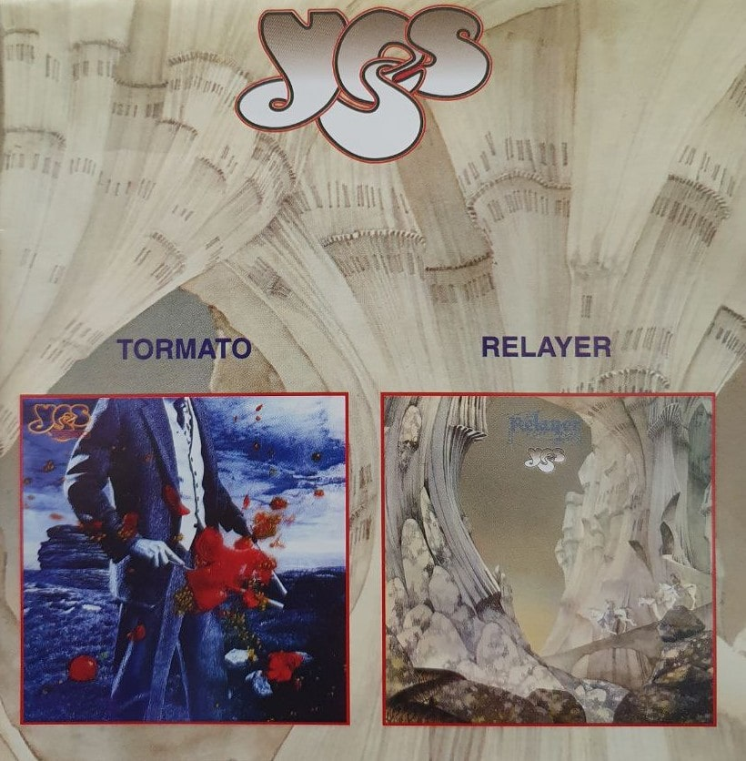 |
2000, Russia-PIRAT, жанр Rock | |
| Close To The Edge / Fragile2 .4 | Not on Label – CD 051 |
1 USD |  |
,Russia-PIRAT, жанр Rock стиль:Art Rock | |
| 224. Yusuf | An Other Cup | Atlantic 94550-2 |
1,51 USD |  |
2006, US, жанр Rock, Pop |
| Исполнитель | Пластинка | Стоимость | Изображение |
|---|---|---|---|
| Jan Luk Ponti | пластинка 1" | 10,45 руб |  |
| пластинка 2 | 11,47 руб | |
|
| Elton Jon | пластинка 3 | 20,50 руб | |
| диск "наименование 4" | 11,47 руб | |